18 practicals, each set out as 1. Question, 2. Aim, 3. Steps, 4. Programme, 5. Execution and Results.
| Location | Status | |
|---|---|---|
| R — as the exam tests it | labs/course-6-r/ |
✅ executed, with R 4.3.3 |
| Python equivalents | labs/course-6-r/python/ |
✅ executed, with assertions |
Every R script is run, and under 5. Execution and Results is what it printed, with the
plots it drew. Two cannot simply be run in a terminal: 17_plotly.R builds charts meant for
RStudio's Viewer, and 18_shiny_app.R is a web app. Their drivers, _drive_17_plotly.py and
_drive_18_shiny_app.py, open them in Chromium, use them as you would, and take the screenshots.
Until October 2026 R could not be installed where this material is verified, and these scripts were desk-checked only, with the numbers in their comments taken from the Python equivalents. Running them found four comments whose numbers R does not give, in experiments 4, 10, 13 and 16; each is corrected, with a note in the file and on this page.
What the Python side buys you: the same calculation, done a second way. When
04_regression.R says the slope is 4.3030, R prints it, and
04_regression.py computes it again from the sums, asserts it, and cross-checks it against
Statistical Foundations for Data Science Unit 4, where the same data was worked by hand.
python3 tools/data-science/run_r_equivalents.pyThat runs all 14 Python equivalents and 17 of the R scripts (the Shiny app is a server, which
capture_lab_outputs.py runs instead), and checks all 18 for balanced delimiters.
| # | Experiment | R file | Python | Unit |
|---|---|---|---|---|
| 1 | Mean, median, mode, variance, SD | 01_descriptive.R |
✅ | 1 |
| 2 | Binomial, normal, Poisson | 02_distributions.R |
✅ | 1 |
| 3 | t-test and chi-square | 03_hypothesis_tests.R |
✅ | 1 |
| 4 | Correlation and regression | 04_regression.R |
✅ | 4 |
| 5 | EDA on a real dataset | 05_eda.R |
✅ | 1 |
| 6 | Feature engineering | 06_feature_engineering.R |
✅ | 1 |
| 7 | Variables, control structures, functions | 07_r_basics.R |
— | 2 |
| 8 | CSV, Excel, JSON, XML | 08_file_io.R |
✅ | 2 |
| 9 | dplyr and tidyr | 09_wrangling.R |
✅ | 3 |
| 10 | Missing data and outliers | 10_missing_outliers.R |
✅ | 3 |
| 11 | Dates and times | 11_dates.R |
✅ | 3 |
| 12 | ggplot2 | 12_ggplot.R |
— | 3 |
| 13 | K-Means clustering | 13_kmeans.R |
✅ | 4 |
| 14 | Confusion matrix, accuracy, ROC | 14_evaluation.R |
✅ | 4 |
| 15 | Text mining and word cloud | 15_text_mining.R |
✅ | 4 |
| 16 | ARIMA forecasting | 16_arima.R |
✅ | 5 |
| 17 | Interactive plots with plotly | 17_plotly.R |
— | 5 |
| 18 | Shiny app with CSV upload | 18_shiny_app.R |
— | 5 |
Experiments 7, 12, 17 and 18 have no Python equivalent: they demonstrate R syntax, ggplot2's grammar, plotly's R interface and the Shiny framework. A translation would teach nothing.
Find the mean, median, mode, variance and standard deviation of twenty students' marks.
Describe the centre and the spread of a set of marks in R, and know which variance R gives.
In R, 01_descriptive.R:
In Python, python/01_descriptive.py:
SAMPLE OR POPULATION
R's var() and sd() divide by n − 1: they are the sample versions. For the
population variance, multiply by (n − 1)/n, as the script does. R also has no function for the
statistical mode — mode() reports how a value is stored — so the script writes one.
In R, 01_descriptive.R:
# =====================================================================
# Run with R 4.3.3 (Rscript --vanilla). What it prints, and the plots it
# draws, are on the lab page, and tools/data-science/run_r_equivalents.py
# runs it again. (Until October 2026 R could not be installed where these
# labs are checked, so this file was desk-checked only; every number in its
# comments has since been checked against R's own output.)
# =====================================================================
# Experiment 1: Mean, Median, Mode, Variance, Standard Deviation
# Python equivalent: python/01_descriptive.py
# Step 1: Enter the marks
marks <- c(45, 67, 78, 52, 89, 91, 73, 64, 58, 82,
76, 69, 71, 85, 60, 55, 93, 48, 79, 66)
# --- Central tendency ---
# Step 2: Find the centre: mean, median and mode
mean(marks) # 70.05
median(marks) # 70.00
# R has NO built-in mode() for the statistical mode -- mode() reports the
# storage type. Define one, which the syllabus expects you to know:
statistical_mode <- function(v) {
freq <- table(v)
as.numeric(names(freq)[freq == max(freq)])
}
statistical_mode(marks) # every value occurs once here, so all 20 are returned
# --- Dispersion ---
# Step 3: Measure the spread: variance, SD, range and quartiles
var(marks) # 202.8921 <- R's var() divides by n-1 (SAMPLE)
sd(marks) # 14.2440 <- likewise
range(marks) # 45 93
diff(range(marks)) # 48
IQR(marks)
quantile(marks)
# Step 4: Convert to the population variance
# Population variance, if you need it, must be computed explicitly:
n <- length(marks)
var(marks) * (n - 1) / n # 192.7475
sqrt(var(marks) * (n - 1) / n) # 13.8834
# --- Everything at once ---
# Step 5: Summarise everything at once
summary(marks)
# NOTE FOR THE EXAM: R's var() and sd() are the n-1 versions. If a question
# asks for the population variance you must convert, as above. This is the
# same n vs n-1 distinction as Course 4 Unit 1.In Python, python/01_descriptive.py:
"""Experiment 1 (Python equivalent) -- mean, median, mode, variance, SD.
R version: ../01_descriptive.R
The R script quotes these numbers; this file is what verifies them.
"""
import statistics
from collections import Counter
from _shared import MARKS
# Step 1: Compute the centre and the spread
def describe(values):
n = len(values)
mean = sum(values) / n
ordered = sorted(values)
median = (statistics.median(values))
counts = Counter(values)
top = max(counts.values())
modes = sorted(v for v, c in counts.items() if c == top)
# R's var() and sd() are the SAMPLE versions -- divide by n-1.
sample_var = sum((x - mean) ** 2 for x in values) / (n - 1)
pop_var = sum((x - mean) ** 2 for x in values) / n
return {
"n": n, "mean": mean, "median": median,
"mode": modes if top > 1 else None,
"sample_var": sample_var, "sample_sd": sample_var ** 0.5,
"pop_var": pop_var, "pop_sd": pop_var ** 0.5,
"range": max(values) - min(values),
}
if __name__ == "__main__":
# Step 2: Print them, against the R function for each
r = describe(MARKS)
print("EXPERIMENT 1 -- Descriptive statistics")
print(f" n = {r['n']}")
print(f" mean = {r['mean']:.4f}")
print(f" median = {r['median']:.4f}")
print(f" mode = {r['mode'] if r['mode'] else 'none (all values unique)'}")
print(f" range = {r['range']}")
print(f" var (n-1) = {r['sample_var']:.4f} <- R's var()")
print(f" sd (n-1) = {r['sample_sd']:.4f} <- R's sd()")
print(f" var (n) = {r['pop_var']:.4f} <- population")
print(f" sd (n) = {r['pop_sd']:.4f}")
# Step 3: Check them against the statistics module
assert abs(r["mean"] - statistics.mean(MARKS)) < 1e-9
assert abs(r["sample_var"] - statistics.variance(MARKS)) < 1e-9
assert abs(r["pop_var"] - statistics.pvariance(MARKS)) < 1e-9
print("\n cross-checked against the statistics module ✓")
print("\n NOTE: R's var() and sd() use n-1. R has no built-in mode();")
print(" the R script defines one, as the syllabus expects.")In R, 01_descriptive.R:
OUTPUT
[1] 70.05
[1] 70
[1] 45 48 52 55 58 60 64 66 67 69 71 73 76 78 79 82 85 89 91 93
[1] 202.8921
[1] 14.24402
[1] 45 93
[1] 48
[1] 20.25
0% 25% 50% 75% 100%
45.00 59.50 70.00 79.75 93.00
[1] 192.7475
[1] 13.88335
Min. 1st Qu. Median Mean 3rd Qu. Max.
45.00 59.50 70.00 70.05 79.75 93.00
In Python, python/01_descriptive.py:
OUTPUT
EXPERIMENT 1 -- Descriptive statistics
n = 20
mean = 70.0500
median = 70.0000
mode = none (all values unique)
range = 48
var (n-1) = 202.8921 <- R's var()
sd (n-1) = 14.2440 <- R's sd()
var (n) = 192.7475 <- population
sd (n) = 13.8834
cross-checked against the statistics module ✓
NOTE: R's var() and sd() use n-1. R has no built-in mode();
the R script defines one, as the syllabus expects.
Every one of the twenty marks occurs once, so the mode function rightly returns all twenty. The Python equivalent gets the same mean, 70.05, and the same sample variance, 202.8921.
RESULT
The mean is 70.05 and the median 70; there is no single mode. The sample variance is 202.89 and the SD 14.24; the population variance is 192.75 and its SD 13.88.
Plot the Binomial(10, 0.3), Poisson(3) and Normal(100, 15) distributions, and find probabilities from each.
Draw three distributions in R, and find their probabilities with the d, p and q functions.
In R, 02_distributions.R:
In Python, python/02_distributions.py:
THE D/P/Q/R NAMING CONVENTION
Worth memorising once, because it applies to every distribution in R:
| Prefix | Gives | Example |
|---|---|---|
d |
density / PMF | dbinom(3, 10, 0.3) = 0.2668 |
p |
cumulative (CDF) | pbinom(3, 10, 0.3) = 0.6496 |
q |
quantile (inverse) | qnorm(0.95, 100, 15) = 124.67 |
r |
random generation | rnorm(100, 100, 15) |
In R, 02_distributions.R:
# =====================================================================
# Run with R 4.3.3 (Rscript --vanilla). What it prints, and the plots it
# draws, are on the lab page, and tools/data-science/run_r_equivalents.py
# runs it again. (Until October 2026 R could not be installed where these
# labs are checked, so this file was desk-checked only; every number in its
# comments has since been checked against R's own output.)
# =====================================================================
# Experiment 2: Visualise Binomial, Normal and Poisson distributions
# Python equivalent: python/02_distributions.py
# --- BINOMIAL(n = 10, p = 0.3) ---
# Step 1: Plot Binomial(10, 0.3), and find P(X = 3) and P(X <= 3)
k <- 0:10
pmf <- dbinom(k, size = 10, prob = 0.3)
barplot(pmf, names.arg = k, col = "#1e7fbf",
main = "Binomial(10, 0.3)", xlab = "k", ylab = "P(X = k)")
dbinom(3, 10, 0.3) # 0.266828 -- P(X = 3)
pbinom(3, 10, 0.3) # 0.649611 -- P(X <= 3)
# mean = np = 3.0 ; variance = np(1-p) = 2.1
# --- POISSON(lambda = 3) ---
# Step 2: Plot Poisson(3), and find P(X = 3) and P(X <= 3)
k <- 0:10
barplot(dpois(k, lambda = 3), names.arg = k, col = "#059669",
main = "Poisson(3)", xlab = "k", ylab = "P(X = k)")
dpois(3, 3) # 0.224042
ppois(3, 3) # 0.647232
# mean = variance = lambda = 3 <- the Poisson signature
# --- NORMAL(mu = 100, sigma = 15) ---
# Step 3: Plot Normal(100, 15), and find the areas within 1, 2 and 3 SD
x <- seq(50, 150, by = 0.5)
plot(x, dnorm(x, mean = 100, sd = 15), type = "l", lwd = 2, col = "#0f4c81",
main = "Normal(100, 15)", ylab = "density")
pnorm(115, 100, 15) # 0.841345
pnorm(115, 100, 15) - pnorm(85, 100, 15) # 0.682689 <- the 68% rule
pnorm(130, 100, 15) - pnorm(70, 100, 15) # 0.954500 <- 95%
pnorm(145, 100, 15) - pnorm(55, 100, 15) # 0.997300 <- 99.7%
qnorm(0.95, 100, 15) # 124.67 -- the 95th percentile
# NAMING CONVENTION -- worth memorising, it applies to every distribution:
# d<name> density / PMF dbinom, dnorm, dpois
# p<name> cumulative (CDF) pbinom, pnorm, ppois
# q<name> quantile (inverse) qbinom, qnorm, qpois
# r<name> random generation rbinom, rnorm, rpoisIn Python, python/02_distributions.py:
"""Experiment 2 (Python equivalent) -- binomial, normal and Poisson.
R version: ../02_distributions.R
Uses the statlib module written for Course 4, so the two courses' distribution
numbers are guaranteed consistent.
"""
import pathlib
import sys
sys.path.insert(0, str(pathlib.Path(__file__).resolve().parents[2]
/ "course-4-stats" / "python"))
import statlib as S # noqa: E402
def binomial_table(n, p):
return [(k, S.binomial_pmf(k, n, p), S.binomial_cdf(k, n, p))
for k in range(n + 1)]
def poisson_table(lam, upto):
return [(k, S.poisson_pmf(k, lam), S.poisson_cdf(k, lam))
for k in range(upto + 1)]
if __name__ == "__main__":
# Step 1: Tabulate Binomial(10, 0.3)
n, p = 10, 0.3
print(f"BINOMIAL(n={n}, p={p}) R: dbinom(k, {n}, {p})")
print(f" {'k':<4}{'P(X=k)':<12}{'P(X<=k)':<12}")
for k, pmf, cdf in binomial_table(n, p):
print(f" {k:<4}{pmf:<12.6f}{cdf:<12.6f}")
print(f" mean = np = {n * p:.2f} variance = np(1-p) = {n * p * (1 - p):.2f}")
# Step 2: Tabulate Poisson(3)
lam = 3
print(f"\nPOISSON(lambda={lam}) R: dpois(k, {lam})")
print(f" {'k':<4}{'P(X=k)':<12}{'P(X<=k)':<12}")
for k, pmf, cdf in poisson_table(lam, 8):
print(f" {k:<4}{pmf:<12.6f}{cdf:<12.6f}")
print(f" mean = variance = lambda = {lam}")
# Step 3: Find the normal's areas within 1, 2 and 3 SD
mu, sigma = 100, 15
print(f"\nNORMAL(mu={mu}, sigma={sigma}) R: pnorm(x, {mu}, {sigma})")
for k in (1, 2, 3):
lo, hi = mu - k * sigma, mu + k * sigma
prob = S.normal_cdf(hi, mu, sigma) - S.normal_cdf(lo, mu, sigma)
print(f" within {k} sd [{lo:6.1f},{hi:6.1f}] = {prob * 100:6.3f}%")
# Step 4: Check the figures the R comments quote
# The empirical rule, to four decimals -- these are the numbers the R
# script's comments quote.
assert abs((S.normal_cdf(115, mu, sigma) - S.normal_cdf(85, mu, sigma))
- 0.682689) < 1e-5
assert abs(S.binomial_pmf(3, 10, 0.3) - 0.266828) < 1e-5
assert abs(S.poisson_pmf(3, 3) - 0.224042) < 1e-5
print("\n all values cross-checked against Course 4's statlib ✓")In R, 02_distributions.R:
OUTPUT
[1] 0.2668279
[1] 0.6496107
[1] 0.2240418
[1] 0.6472319
[1] 0.8413447
[1] 0.6826895
[1] 0.9544997
[1] 0.9973002
[1] 124.6728
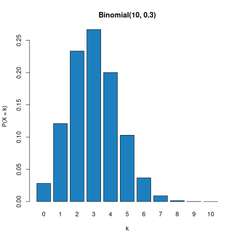
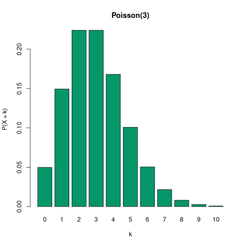
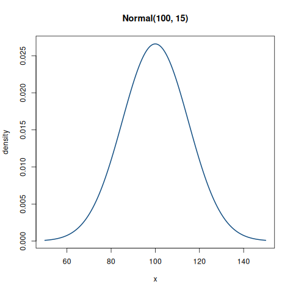
In Python, python/02_distributions.py:
OUTPUT
BINOMIAL(n=10, p=0.3) R: dbinom(k, 10, 0.3)
k P(X=k) P(X<=k)
0 0.028248 0.028248
1 0.121061 0.149308
2 0.233474 0.382783
3 0.266828 0.649611
4 0.200121 0.849732
5 0.102919 0.952651
6 0.036757 0.989408
7 0.009002 0.998410
8 0.001447 0.999856
9 0.000138 0.999994
10 0.000006 1.000000
mean = np = 3.00 variance = np(1-p) = 2.10
POISSON(lambda=3) R: dpois(k, 3)
k P(X=k) P(X<=k)
0 0.049787 0.049787
1 0.149361 0.199148
2 0.224042 0.423190
3 0.224042 0.647232
4 0.168031 0.815263
5 0.100819 0.916082
6 0.050409 0.966491
7 0.021604 0.988095
8 0.008102 0.996197
mean = variance = lambda = 3
NORMAL(mu=100, sigma=15) R: pnorm(x, 100, 15)
within 1 sd [ 85.0, 115.0] = 68.269%
within 2 sd [ 70.0, 130.0] = 95.450%
within 3 sd [ 55.0, 145.0] = 99.730%
all values cross-checked against Course 4's statlib ✓
The three plots are the binomial's and the Poisson's bar charts and the normal curve. The areas within 1, 2 and 3 SD are 0.6827, 0.9545 and 0.9973: the 68–95–99.7 rule.
RESULT
P(X = 3) is 0.2668 for the binomial and 0.2240 for the Poisson; P(X ≤ 3) is 0.6496 and 0.6472. For the normal, P(X ≤ 115) = 0.8413, and the 95th percentile is 124.67.
Test whether two groups' mean scores differ, by the t-test, and whether region and purchase type are associated, by the chi-square test.
Run the t-test in its variants and the chi-square test of independence in R, and read their output.
In R, 03_hypothesis_tests.R:
In Python, python/03_hypothesis_tests.py:
VAR.EQUAL CHANGES THE TEST
t.test(a, b, var.equal = TRUE) is the pooled t-test from Statistical Foundations for Data Science Unit 5.
Omit it and R runs Welch's test, which does not assume equal variances and
reports fractional degrees of freedom. Both are defensible; know which you ran.
Check the assumption first with var.test() — on the lab data it gives
F = 1.8618, p = 0.3682, so equal variances are reasonable.
In R, 03_hypothesis_tests.R:
# =====================================================================
# Run with R 4.3.3 (Rscript --vanilla). What it prints, and the plots it
# draws, are on the lab page, and tools/data-science/run_r_equivalents.py
# runs it again. (Until October 2026 R could not be installed where these
# labs are checked, so this file was desk-checked only; every number in its
# comments has since been checked against R's own output.)
# =====================================================================
# Experiment 3: t-test and Chi-Square test
# Python equivalent: python/03_hypothesis_tests.py
# Same data as Course 4 Unit 5, so the numbers must agree with those notes.
# Step 1: Enter the two groups
group_a <- c(78, 82, 75, 88, 79, 84, 80, 86, 77, 83)
group_b <- c(72, 75, 70, 78, 74, 71, 76, 73, 69, 77)
# --- TWO-SAMPLE t-TEST ---
# Step 2: Run the pooled two-sample t-test
t.test(group_a, group_b, var.equal = TRUE)
# t = 4.7541, df = 18, p-value = 0.000159
# -> reject H0: the two group means differ significantly
# mean of A = 81.20, mean of B = 73.50, pooled variance = 13.1167
# Step 3: Run Welch's test, and check the equal-variance assumption
# var.equal = TRUE gives the POOLED t-test (Course 4 Unit 5).
# Omit it and R runs Welch's t-test instead, which does not assume equal
# variances and reports fractional degrees of freedom. Both are defensible;
# know which one you asked for.
t.test(group_a, group_b) # Welch -- note the different df
# Check the equal-variance assumption first:
var.test(group_a, group_b) # F = 1.8618, p = 0.3682 -> variances OK
# Step 4: Run the one-sample and paired t-tests
# One-sample and paired variants:
t.test(group_a, mu = 80)
t.test(group_a, group_b, paired = TRUE)
# --- CHI-SQUARE TEST OF INDEPENDENCE ---
# Step 5: Test region against purchase type by chi-square
observed <- matrix(c(30, 70, 45, 55, 25, 75), nrow = 3, byrow = TRUE,
dimnames = list(c("North", "South", "East"),
c("Premium", "Standard")))
observed
chisq.test(observed)
# X-squared = 9.75, df = 2, p-value = 0.007635
# -> reject H0: region and purchase type ARE associated
# Step 6: Check the expected counts and the residuals
result <- chisq.test(observed)
result$expected # all 33.33 / 66.67 -- every one >= 5, assumption satisfied
result$residuals # which cells contribute most to the statistic
# NOTE byrow = TRUE. R's matrix() fills COLUMN-wise by default, so omitting it
# silently transposes your table and changes the answer.In Python, python/03_hypothesis_tests.py:
"""Experiment 3 (Python equivalent) -- t-test and chi-square test.
R version: ../03_hypothesis_tests.R (t.test() and chisq.test())
"""
import pathlib, sys
sys.path.insert(0, str(pathlib.Path(__file__).resolve().parents[2] / "course-4-stats" / "python"))
import statlib as S # noqa: E402
GROUP_A = [78, 82, 75, 88, 79, 84, 80, 86, 77, 83]
GROUP_B = [72, 75, 70, 78, 74, 71, 76, 73, 69, 77]
OBSERVED = [[30, 70], [45, 55], [25, 75]] # region x purchase type
def describe(v):
m = sum(v) / len(v)
return m, sum((x - m) ** 2 for x in v) / (len(v) - 1)
def two_sample_t(a, b):
ma, va = describe(a)
mb, vb = describe(b)
na, nb = len(a), len(b)
pooled = ((na - 1) * va + (nb - 1) * vb) / (na + nb - 2)
se = (pooled * (1 / na + 1 / nb)) ** 0.5
t = (ma - mb) / se
df = na + nb - 2
return t, df, S.t_sf_two_tailed(t, df), pooled, se
def chi_square(observed):
rows = [sum(r) for r in observed]
cols = [sum(observed[i][j] for i in range(len(observed)))
for j in range(len(observed[0]))]
total = sum(rows)
chi2 = 0.0
expected = []
for i, row in enumerate(observed):
exp_row = []
for j, o in enumerate(row):
e = rows[i] * cols[j] / total
exp_row.append(e)
chi2 += (o - e) ** 2 / e
expected.append(exp_row)
df = (len(observed) - 1) * (len(observed[0]) - 1)
return chi2, df, S.chi2_sf(chi2, df), expected
if __name__ == "__main__":
# Step 1: Run the pooled two-sample t-test
t, df, p, pooled, se = two_sample_t(GROUP_A, GROUP_B)
print("TWO-SAMPLE t-TEST R: t.test(a, b, var.equal = TRUE)")
print(f" mean A = {sum(GROUP_A)/len(GROUP_A):.4f}")
print(f" mean B = {sum(GROUP_B)/len(GROUP_B):.4f}")
print(f" pooled var = {pooled:.4f} se = {se:.4f}")
print(f" t = {t:.4f} df = {df} p = {p:.6f}")
print(f" -> {'reject' if p < 0.05 else 'fail to reject'} H0 at alpha = 0.05")
# Step 2: Run the chi-square test
chi2, cdf, cp, expected = chi_square(OBSERVED)
print("\nCHI-SQUARE TEST R: chisq.test(matrix)")
print(" expected frequencies:")
for row in expected:
print(" ", " ".join(f"{e:7.3f}" for e in row))
print(f" chi-square = {chi2:.4f} df = {cdf} p = {cp:.6f}")
print(f" -> {'reject' if cp < 0.05 else 'fail to reject'} H0")
print(f" smallest expected = {min(min(r) for r in expected):.2f} (must be >= 5)")
# Step 3: Check against Course 4 Unit 5
# These must agree with Course 4 Unit 5, which uses the same data.
assert abs(t - 4.754053) < 1e-5, t
assert abs(chi2 - 9.75) < 1e-9
print("\n matches Course 4 Unit 5's worked examples ✓")In R, 03_hypothesis_tests.R:
OUTPUT
Two Sample t-test
data: group_a and group_b
t = 4.7541, df = 18, p-value = 0.0001585
alternative hypothesis: true difference in means is not equal to 0
95 percent confidence interval:
4.297198 11.102802
sample estimates:
mean of x mean of y
81.2 73.5
Welch Two Sample t-test
data: group_a and group_b
t = 4.7541, df = 16.503, p-value = 0.0001987
alternative hypothesis: true difference in means is not equal to 0
95 percent confidence interval:
4.274943 11.125057
sample estimates:
mean of x mean of y
81.2 73.5
F test to compare two variances
data: group_a and group_b
F = 1.8618, num df = 9, denom df = 9, p-value = 0.3682
alternative hypothesis: true ratio of variances is not equal to 1
95 percent confidence interval:
0.4624493 7.4956691
sample estimates:
ratio of variances
1.861818
One Sample t-test
data: group_a
t = 0.91856, df = 9, p-value = 0.3823
alternative hypothesis: true mean is not equal to 80
95 percent confidence interval:
78.24473 84.15527
sample estimates:
mean of x
81.2
Paired t-test
data: group_a and group_b
t = 7.4516, df = 9, p-value = 3.886e-05
alternative hypothesis: true mean difference is not equal to 0
95 percent confidence interval:
5.362438 10.037562
sample estimates:
mean difference
7.7
Premium Standard
North 30 70
South 45 55
East 25 75
Pearson's Chi-squared test
data: observed
X-squared = 9.75, df = 2, p-value = 0.007635
Premium Standard
North 33.33333 66.66667
South 33.33333 66.66667
East 33.33333 66.66667
Premium Standard
North -0.5773503 0.4082483
South 2.0207259 -1.4288690
East -1.4433757 1.0206207
In Python, python/03_hypothesis_tests.py:
OUTPUT
TWO-SAMPLE t-TEST R: t.test(a, b, var.equal = TRUE)
mean A = 81.2000
mean B = 73.5000
pooled var = 13.1167 se = 1.6197
t = 4.7541 df = 18 p = 0.000159
-> reject H0 at alpha = 0.05
CHI-SQUARE TEST R: chisq.test(matrix)
expected frequencies:
33.333 66.667
33.333 66.667
33.333 66.667
chi-square = 9.7500 df = 2 p = 0.007635
-> reject H0
smallest expected = 33.33 (must be >= 5)
matches Course 4 Unit 5's worked examples ✓
The pooled test has 18 degrees of freedom and Welch's 16.503: the same t, 4.7541, read against a slightly different distribution. The chi-square test's expected counts are all 33.33 or 66.67, so none is below 5.
RESULT
The two means, 81.2 and 73.5, differ significantly (t = 4.7541, df = 18, p = 0.00016). Region and purchase type are associated (χ² = 9.75, df = 2, p = 0.0076).
Find the correlation between study hours and exam scores, fit a regression line, and predict the score for 7.5 hours.
Fit and read a simple linear regression in R with lm().
In R, 04_regression.R:
In Python, python/04_regression.py:
TWO FREE CHECKS
For a simple regression, R² is the square of r, and the F statistic is the square of the slope's t. Both hold here: 0.997904² = 0.995812, and 43.615² = 1902.26.
In R, 04_regression.R:
# =====================================================================
# Run with R 4.3.3 (Rscript --vanilla). What it prints, and the plots it
# draws, are on the lab page, and tools/data-science/run_r_equivalents.py
# runs it again. (Until October 2026 R could not be installed where these
# labs are checked, so this file was desk-checked only; every number in its
# comments has since been checked against R's own output.)
# =====================================================================
# Experiment 4: Correlation and simple linear regression
# Python equivalent: python/04_regression.py
# Same data as Course 4 Unit 4 -- coefficients must match those notes.
# Step 1: Enter the hours and scores
hours <- c(2, 3, 4, 5, 6, 7, 8, 9, 10, 11)
scores <- c(52, 55, 61, 64, 70, 72, 78, 82, 85, 91)
df <- data.frame(hours, scores)
# Step 2: Measure the correlation, and plot the points
cor(hours, scores) # 0.997904 -- Pearson
cor(hours, scores, method = "spearman") # rank correlation
cov(hours, scores)
plot(hours, scores, pch = 19, col = "#1e7fbf",
main = "Exam score against study hours")
# Step 3: Fit the regression line
model <- lm(scores ~ hours, data = df)
summary(model)
# (Intercept) 43.0303 Std.Error 0.7011 t 61.38
# hours 4.3030 Std.Error 0.0987 t 43.615 p 8.43e-11
# [Corrected: this gave the intercept's standard error as 1.0847 and its
# t as 39.671. R prints 0.70111 and 61.38, and by hand
# SE = 0.8961 x sqrt(1/10 + 6.5^2/82.5) = 0.7011.]
# Multiple R-squared: 0.995812 F: 1902.26 on 1 and 8 DF
#
# Fitted line: scores = 43.0303 + 4.3030 * hours
# Each extra hour of study is ASSOCIATED WITH about 4.3 more marks.
abline(model, col = "red", lwd = 2)
# Step 4: Use the model: coefficients, intervals, a prediction, residuals
coef(model)
confint(model)
predict(model, newdata = data.frame(hours = 7.5)) # 75.30
residuals(model)
par(mfrow = c(2, 2)); plot(model); par(mfrow = c(1, 1)) # diagnostics
# Step 5: Read the ANOVA table
anova(model) # SS_reg = 1527.58, SS_res = 6.42, F = 1902.26
# TWO FREE ARITHMETIC CHECKS for simple regression (Course 4 Unit 4):
# R-squared == r^2 0.997904^2 = 0.995812 ✓
# F == t^2 43.615^2 = 1902.26 ✓In Python, python/04_regression.py:
"""Experiment 4 (Python equivalent) -- correlation and simple linear regression.
R version: ../04_regression.R (cor() and lm())
Uses the same hours/scores pair as Course 4 Unit 4, so the coefficients here
must reproduce that unit's worked example exactly.
"""
import pathlib, sys
sys.path.insert(0, str(pathlib.Path(__file__).resolve().parents[2] / "course-4-stats" / "python"))
import statlib as S # noqa: E402
from _shared import HOURS, SCORES
# Step 1: Compute r, the line and the ANOVA from the sums
def regress(x, y):
n = len(x)
mx, my = sum(x) / n, sum(y) / n
sxy = sum((a - mx) * (b - my) for a, b in zip(x, y))
sxx = sum((a - mx) ** 2 for a in x)
syy = sum((b - my) ** 2 for b in y)
r = sxy / (sxx * syy) ** 0.5
b1 = sxy / sxx
b0 = my - b1 * mx
ss_res = sum((b - (b0 + b1 * a)) ** 2 for a, b in zip(x, y))
ss_reg = syy - ss_res
r2 = ss_reg / syy
ms_res = ss_res / (n - 2)
se_b1 = (ms_res / sxx) ** 0.5
t = b1 / se_b1
f = ss_reg / ms_res
return dict(n=n, r=r, b0=b0, b1=b1, r2=r2, ss_tot=syy, ss_res=ss_res,
ss_reg=ss_reg, ms_res=ms_res, se_b1=se_b1, t=t, f=f,
p=S.t_sf_two_tailed(t, n - 2))
if __name__ == "__main__":
# Step 2: Print the results
m = regress(HOURS, SCORES)
print("CORRELATION AND REGRESSION R: cor(x,y) ; lm(y ~ x)")
print(f" Pearson r = {m['r']:.6f}")
print(f" intercept b0 = {m['b0']:.4f}")
print(f" slope b1 = {m['b1']:.4f}")
print(f" fitted line: y = {m['b0']:.4f} + {m['b1']:.4f} x")
print(f"\n R-squared = {m['r2']:.6f} (= r^2 = {m['r']**2:.6f})")
print(f" SE(b1) = {m['se_b1']:.4f}")
print(f" t = {m['t']:.4f} on {m['n']-2} df, p = {m['p']:.3e}")
print(f" F = {m['f']:.4f} (= t^2 = {m['t']**2:.4f})")
print("\n ANOVA")
print(f" Regression SS={m['ss_reg']:10.4f} df=1")
print(f" Residual SS={m['ss_res']:10.4f} df={m['n']-2} MS={m['ms_res']:.4f}")
print(f" Total SS={m['ss_tot']:10.4f} df={m['n']-1}")
print(f"\n predict at x=7.5 -> {m['b0'] + m['b1']*7.5:.2f}")
# Step 3: Check that R-squared = r^2 and F = t^2
assert abs(m["r2"] - m["r"] ** 2) < 1e-12, "R2 must equal r squared"
assert abs(m["f"] - m["t"] ** 2) < 1e-6, "F must equal t squared"
assert abs(m["b1"] - 4.3030) < 1e-3
print("\n R2 = r^2 and F = t^2 both hold; matches Course 4 Unit 4 ✓")In R, 04_regression.R:
OUTPUT
[1] 0.9979039
[1] 1
[1] 39.44444
Call:
lm(formula = scores ~ hours, data = df)
Residuals:
Min 1Q Median 3Q Max
-1.1515 -0.8409 0.3030 0.6136 1.1515
Coefficients:
Estimate Std. Error t value Pr(>|t|)
(Intercept) 43.03030 0.70111 61.38 5.52e-12 ***
hours 4.30303 0.09866 43.62 8.43e-11 ***
---
Signif. codes: 0 ‘***’ 0.001 ‘**’ 0.01 ‘*’ 0.05 ‘.’ 0.1 ‘ ’ 1
Residual standard error: 0.8961 on 8 degrees of freedom
Multiple R-squared: 0.9958, Adjusted R-squared: 0.9953
F-statistic: 1902 on 1 and 8 DF, p-value: 8.425e-11
(Intercept) hours
43.03030 4.30303
2.5 % 97.5 %
(Intercept) 41.413546 44.64706
hours 4.075521 4.53054
1
75.30303
1 2 3 4 5 6 7
0.3636364 -0.9393939 0.7575758 -0.5454545 1.1515152 -1.1515152 0.5454545
8 9 10
0.2424242 -1.0606061 0.6363636
Analysis of Variance Table
Response: scores
Df Sum Sq Mean Sq F value Pr(>F)
hours 1 1527.58 1527.6 1902.3 8.425e-11 ***
Residuals 8 6.42 0.8
---
Signif. codes: 0 ‘***’ 0.001 ‘**’ 0.01 ‘*’ 0.05 ‘.’ 0.1 ‘ ’ 1
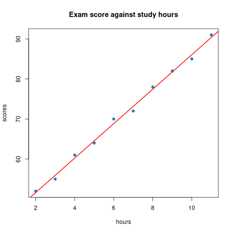
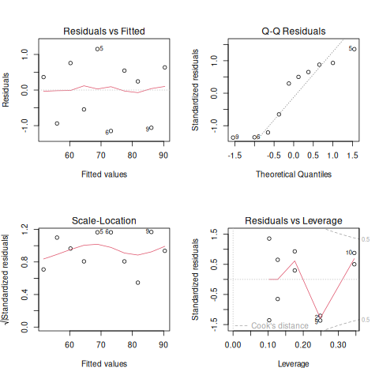
In Python, python/04_regression.py:
OUTPUT
CORRELATION AND REGRESSION R: cor(x,y) ; lm(y ~ x)
Pearson r = 0.997904
intercept b0 = 43.0303
slope b1 = 4.3030
fitted line: y = 43.0303 + 4.3030 x
R-squared = 0.995812 (= r^2 = 0.995812)
SE(b1) = 0.0987
t = 43.6150 on 8 df, p = 8.425e-11
F = 1902.2642 (= t^2 = 1902.2642)
ANOVA
Regression SS= 1527.5758 df=1
Residual SS= 6.4242 df=8 MS=0.8030
Total SS= 1534.0000 df=9
predict at x=7.5 -> 75.30
R2 = r^2 and F = t^2 both hold; matches Course 4 Unit 4 ✓
Corrected: the comment under summary(model) gave the intercept's standard error as
1.0847, and its t as 39.671. R prints 0.70111 and 61.38, and by hand
SE = 0.8961 × √(1/10 + 6.5²/82.5) = 0.7011. The slope's figures were right. The second plot is the
four diagnostic plots, from plot(model).
RESULT
r = 0.9979, and the fitted line is score = 43.0303 + 4.3030 × hours, with R² = 0.9958. At 7.5 hours it predicts 75.30.
Explore a dataset: its structure, summary statistics, missing values, categories, distributions, outliers and correlations.
Carry out the steps of exploratory data analysis in R, on the iris data.
In R, 05_eda.R:
In Python, python/05_eda.py:
In R, 05_eda.R:
# =====================================================================
# Run with R 4.3.3 (Rscript --vanilla). What it prints, and the plots it
# draws, are on the lab page, and tools/data-science/run_r_equivalents.py
# runs it again. (Until October 2026 R could not be installed where these
# labs are checked, so this file was desk-checked only; every number in its
# comments has since been checked against R's own output.)
# =====================================================================
# Experiment 5: Exploratory Data Analysis
# Python equivalent: python/05_eda.py
# Step 1: Load the data
data(iris) # or read.csv("yourfile.csv")
# Step 2: Look at its structure and summary
str(iris) # structure: 150 obs. of 5 variables
dim(iris); nrow(iris); ncol(iris)
head(iris); tail(iris)
summary(iris) # min, Q1, median, mean, Q3, max per column
# Step 3: Check for missing values
colSums(is.na(iris)) # missing values per column
sum(complete.cases(iris)) # rows with no NA at all
# Step 4: Count the categories
table(iris$Species) # categorical counts
prop.table(table(iris$Species)) # as proportions
# Step 5: Plot the distributions, and find the outliers
hist(iris$Sepal.Length, breaks = 10, col = "#1e7fbf",
main = "Distribution of sepal length")
boxplot(Sepal.Length ~ Species, data = iris, col = "#059669")
boxplot(iris$Sepal.Length)$out # the outlier values themselves
pairs(iris[, 1:4], col = iris$Species) # scatterplot matrix
# Step 6: Find the correlations
cor(iris[, 1:4]) # correlation matrix -- numeric columns only
# Step 7: Judge the skew from the mean and median
# Skewness needs a package; the sign is what matters
# library(e1071); skewness(iris$Sepal.Length)
# mean > median -> right-skewed ; mean < median -> left-skewed
mean(iris$Sepal.Length); median(iris$Sepal.Length)In Python, python/05_eda.py:
"""Experiment 5 (Python equivalent) -- exploratory data analysis.
R version: ../05_eda.R (str, summary, colSums(is.na()), hist, boxplot)
"""
from _shared import STUDENTS
COLS = ["name", "section", "gender", "hours", "marks", "attendance"]
def to_columns(rows):
return {c: [r[i] for r in rows] for i, c in enumerate(COLS)}
def summarise_numeric(v):
s = sorted(v)
n = len(s)
def q(p):
pos = (n - 1) * p
lo = int(pos)
hi = min(lo + 1, n - 1)
return s[lo] + (pos - lo) * (s[hi] - s[lo])
return dict(min=s[0], q1=q(.25), median=q(.5), mean=sum(s)/n,
q3=q(.75), max=s[-1])
if __name__ == "__main__":
d = to_columns(STUDENTS)
# Step 1: Show the structure
print("STRUCTURE R: str(df)")
print(f" {len(STUDENTS)} observations of {len(COLS)} variables")
for c in COLS:
kind = "num" if isinstance(d[c][0], (int, float)) else "chr"
print(f" {c:<12} {kind} e.g. {d[c][0]}")
# Step 2: Summarise the numeric columns
print("\nSUMMARY R: summary(df)")
print(f" {'':<12}{'Min':>8}{'1stQu':>9}{'Median':>9}{'Mean':>9}{'3rdQu':>9}{'Max':>8}")
for c in ("hours", "marks", "attendance"):
s = summarise_numeric(d[c])
print(f" {c:<12}{s['min']:>8.2f}{s['q1']:>9.2f}{s['median']:>9.2f}"
f"{s['mean']:>9.2f}{s['q3']:>9.2f}{s['max']:>8.2f}")
# Step 3: Count the missing values and the categories
print("\nMISSING VALUES R: colSums(is.na(df))")
for c in COLS:
print(f" {c:<12} {sum(1 for x in d[c] if x is None)}")
print("\nCATEGORICAL COUNTS R: table(df$section)")
for c in ("section", "gender"):
counts = {}
for v in d[c]:
counts[v] = counts.get(v, 0) + 1
print(f" {c}: " + ", ".join(f"{k}={v}" for k, v in sorted(counts.items())))
# Step 4: Draw a text histogram, and find the outliers
print("\nHISTOGRAM of marks R: hist(df$marks)")
for lo in range(40, 100, 10):
n = sum(1 for m in d["marks"] if lo <= m < lo + 10)
print(f" {lo}-{lo+9} {'#' * n * 3} {n}")
print("\nOUTLIERS (1.5 x IQR) R: boxplot(df$marks)$out")
s = summarise_numeric(d["marks"])
iqr = s["q3"] - s["q1"]
lo, hi = s["q1"] - 1.5 * iqr, s["q3"] + 1.5 * iqr
out = [m for m in d["marks"] if m < lo or m > hi]
print(f" IQR = {iqr:.2f}, fences = [{lo:.2f}, {hi:.2f}]")
print(f" outliers: {out if out else 'none'}")
# Step 5: Find the correlation
print("\nCORRELATION R: cor(df[, c('hours','marks')])")
x, y = d["hours"], d["marks"]
n = len(x); mx, my = sum(x)/n, sum(y)/n
r = (sum((a-mx)*(b-my) for a, b in zip(x, y))
/ (sum((a-mx)**2 for a in x) * sum((b-my)**2 for b in y)) ** .5)
print(f" r(hours, marks) = {r:.4f}")In R, 05_eda.R:
OUTPUT
'data.frame': 150 obs. of 5 variables:
$ Sepal.Length: num 5.1 4.9 4.7 4.6 5 5.4 4.6 5 4.4 4.9 ...
$ Sepal.Width : num 3.5 3 3.2 3.1 3.6 3.9 3.4 3.4 2.9 3.1 ...
$ Petal.Length: num 1.4 1.4 1.3 1.5 1.4 1.7 1.4 1.5 1.4 1.5 ...
$ Petal.Width : num 0.2 0.2 0.2 0.2 0.2 0.4 0.3 0.2 0.2 0.1 ...
$ Species : Factor w/ 3 levels "setosa","versicolor",..: 1 1 1 1 1 1 1 1 1 1 ...
[1] 150 5
[1] 150
[1] 5
Sepal.Length Sepal.Width Petal.Length Petal.Width Species
1 5.1 3.5 1.4 0.2 setosa
2 4.9 3.0 1.4 0.2 setosa
3 4.7 3.2 1.3 0.2 setosa
4 4.6 3.1 1.5 0.2 setosa
5 5.0 3.6 1.4 0.2 setosa
6 5.4 3.9 1.7 0.4 setosa
Sepal.Length Sepal.Width Petal.Length Petal.Width Species
145 6.7 3.3 5.7 2.5 virginica
146 6.7 3.0 5.2 2.3 virginica
147 6.3 2.5 5.0 1.9 virginica
148 6.5 3.0 5.2 2.0 virginica
149 6.2 3.4 5.4 2.3 virginica
150 5.9 3.0 5.1 1.8 virginica
Sepal.Length Sepal.Width Petal.Length Petal.Width
Min. :4.300 Min. :2.000 Min. :1.000 Min. :0.100
1st Qu.:5.100 1st Qu.:2.800 1st Qu.:1.600 1st Qu.:0.300
Median :5.800 Median :3.000 Median :4.350 Median :1.300
Mean :5.843 Mean :3.057 Mean :3.758 Mean :1.199
3rd Qu.:6.400 3rd Qu.:3.300 3rd Qu.:5.100 3rd Qu.:1.800
Max. :7.900 Max. :4.400 Max. :6.900 Max. :2.500
Species
setosa :50
versicolor:50
virginica :50
Sepal.Length Sepal.Width Petal.Length Petal.Width Species
0 0 0 0 0
[1] 150
setosa versicolor virginica
50 50 50
setosa versicolor virginica
0.3333333 0.3333333 0.3333333
numeric(0)
Sepal.Length Sepal.Width Petal.Length Petal.Width
Sepal.Length 1.0000000 -0.1175698 0.8717538 0.8179411
Sepal.Width -0.1175698 1.0000000 -0.4284401 -0.3661259
Petal.Length 0.8717538 -0.4284401 1.0000000 0.9628654
Petal.Width 0.8179411 -0.3661259 0.9628654 1.0000000
[1] 5.843333
[1] 5.8
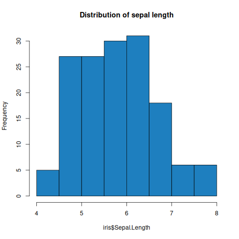
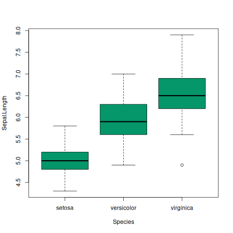
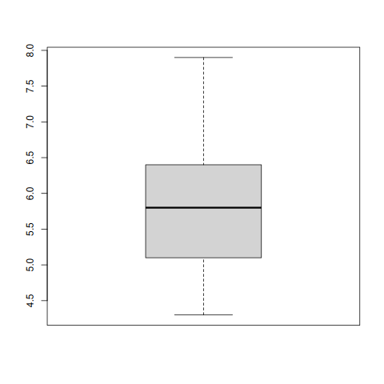
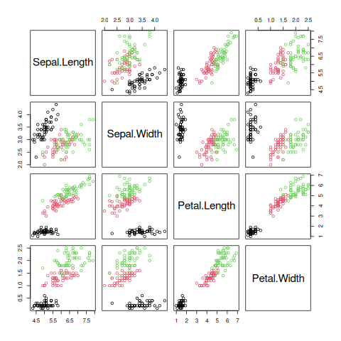
In Python, python/05_eda.py:
OUTPUT
STRUCTURE R: str(df)
10 observations of 6 variables
name chr e.g. Ananya
section chr e.g. A
gender chr e.g. F
hours num e.g. 9
marks num e.g. 85
attendance num e.g. 92
SUMMARY R: summary(df)
Min 1stQu Median Mean 3rdQu Max
hours 2.00 4.25 6.50 6.50 8.75 11.00
marks 41.00 56.75 71.00 69.10 83.50 91.00
attendance 60.00 72.00 82.50 80.30 89.50 95.00
MISSING VALUES R: colSums(is.na(df))
name 0
section 0
gender 0
hours 0
marks 0
attendance 0
CATEGORICAL COUNTS R: table(df$section)
section: A=4, B=3, C=3
gender: F=6, M=4
HISTOGRAM of marks R: hist(df$marks)
40-49 ###### 2
50-59 ### 1
60-69 ###### 2
70-79 ###### 2
80-89 ###### 2
90-99 ### 1
OUTLIERS (1.5 x IQR) R: boxplot(df$marks)$out
IQR = 26.75, fences = [16.62, 123.62]
outliers: none
CORRELATION R: cor(df[, c('hours','marks')])
r(hours, marks) = 0.9932
The R script uses R's built-in iris data; the Python equivalent, which has no iris
without a package, explores the ten students the other experiments use. The four plots are the
histogram, the boxplot by species, the boxplot of all sepal lengths, and the scatterplot matrix.
RESULT
iris has 150 rows and 5 columns, no missing values, and 50 flowers of each species. Petal length and width are the most correlated (0.963). Sepal length's mean, 5.843, is just above its median, 5.8: a slight right skew.
Normalise, standardise, encode and bin a column of marks and a column of sections.
Prepare features for modelling in R: scale them, encode categories, and bin a number.
In R, 06_feature_engineering.R:
In Python, python/06_feature_engineering.py:
R AND PYTHON SCALE DIFFERENTLY
scale() uses sd(), which divides by n−1. scikit-learn's
StandardScaler divides by n. The standardised values therefore differ
slightly between R and scikit-learn. Harmless for modelling,
but do not expect identical numbers, and say so if asked.
In R, 06_feature_engineering.R:
# =====================================================================
# Run with R 4.3.3 (Rscript --vanilla). What it prints, and the plots it
# draws, are on the lab page, and tools/data-science/run_r_equivalents.py
# runs it again. (Until October 2026 R could not be installed where these
# labs are checked, so this file was desk-checked only; every number in its
# comments has since been checked against R's own output.)
# =====================================================================
# Experiment 6: Scaling, normalisation and encoding
# Python equivalent: python/06_feature_engineering.py
# Step 1: Enter the marks and sections
marks <- c(85, 62, 91, 55, 74, 79, 48, 88, 68, 41)
section <- factor(c("A","A","B","B","A","C","C","B","A","C"))
# --- MIN-MAX NORMALISATION: x' = (x - min)/(max - min) -> [0, 1] ---
# Step 2: Normalise to [0, 1] by min-max
normalise <- function(x) (x - min(x)) / (max(x) - min(x))
normalise(marks)
range(normalise(marks)) # must be exactly 0 and 1
# --- STANDARDISATION: x' = (x - mean)/sd -> mean 0, sd 1 ---
# Step 3: Standardise to mean 0 and SD 1
scale(marks) # returns a matrix; use as.vector() for a vector
as.vector(scale(marks))
mean(scale(marks)); sd(scale(marks)) # ~0 and exactly 1
# NOTE: scale() uses sd(), which divides by n-1. Python's
# sklearn StandardScaler divides by n. The values differ slightly --
# harmless for modelling, but do not expect identical numbers.
# --- ONE-HOT ENCODING ---
# Step 4: One-hot encode the sections
model.matrix(~ section - 1) # the -1 drops the intercept -> k columns
model.matrix(~ section) # keeps intercept -> k-1 columns (reference = A)
# For MODELLING use the k-1 form: k columns are perfectly collinear
# (they sum to 1), which is the dummy variable trap. lm() and glm() handle
# factors automatically, so you rarely encode by hand.
# --- LABEL / ORDINAL ENCODING (only for genuinely ordered categories) ---
# Step 5: Encode an ordered category, and avoid the factor trap
sizes <- factor(c("small","large","medium"),
levels = c("small","medium","large"), ordered = TRUE)
as.numeric(sizes) # 1 3 2 -- correct here, because the order is real
# THE CLASSIC BUG: as.numeric() on an unordered factor returns LEVEL CODES,
# not the values. For a factor of numbers use:
f <- factor(c("10","20","30"))
as.numeric(f) # 1 2 3 <- WRONG
as.numeric(as.character(f)) # 10 20 30 <- correct
# --- BINNING ---
# Step 6: Bin the marks into classes
cut(marks, breaks = c(0, 40, 50, 60, 75, 100),
labels = c("Fail","Pass","Second","First","Distinction"),
right = FALSE)
table(cut(marks, breaks = c(0, 40, 50, 60, 75, 100),
labels = c("Fail","Pass","Second","First","Distinction"),
right = FALSE))In Python, python/06_feature_engineering.py:
"""Experiment 6 (Python equivalent) -- scaling, normalisation, encoding.
R version: ../06_feature_engineering.R (scale(), model.matrix(), cut())
"""
from _shared import STUDENTS
def min_max(v):
lo, hi = min(v), max(v)
return [(x - lo) / (hi - lo) for x in v]
def standardise(v, sample=True):
n = len(v)
m = sum(v) / n
div = (n - 1) if sample else n
sd = (sum((x - m) ** 2 for x in v) / div) ** 0.5
return [(x - m) / sd for x in v], m, sd
def one_hot(values):
levels = sorted(set(values))
return levels, [[1 if v == lv else 0 for lv in levels] for v in values]
def bin_values(v, edges, labels):
out = []
for x in v:
for i in range(len(edges) - 1):
if edges[i] <= x < edges[i + 1]:
out.append(labels[i]); break
else:
out.append(labels[-1])
return out
if __name__ == "__main__":
marks = [r[4] for r in STUDENTS]
sections = [r[1] for r in STUDENTS]
# Step 1: Normalise by min-max
print("MIN-MAX NORMALISATION x' = (x - min)/(max - min)")
nm = min_max(marks)
for m, v in list(zip(marks, nm))[:5]:
print(f" {m:>3} -> {v:.4f}")
print(f" range check: min={min(nm):.4f} max={max(nm):.4f} (must be 0 and 1)")
# Step 2: Standardise
print("\nSTANDARDISATION R: scale(x) -- uses n-1")
st, mean, sd = standardise(marks)
print(f" mean = {mean:.4f} sd (n-1) = {sd:.4f}")
for m, v in list(zip(marks, st))[:5]:
print(f" {m:>3} -> {v:+.4f}")
chk_m = sum(st) / len(st)
chk_s = (sum((x - chk_m) ** 2 for x in st) / (len(st) - 1)) ** 0.5
print(f" check: mean={chk_m:.10f} sd={chk_s:.6f} (must be 0 and 1)")
# Step 3: One-hot encode
print("\nONE-HOT ENCODING R: model.matrix(~ section - 1)")
levels, encoded = one_hot(sections)
print(f" levels: {levels}")
for s, e in list(zip(sections, encoded))[:5]:
print(f" {s} -> {e}")
print(" NOTE: for a linear model R drops one level as the reference,")
print(" giving k-1 columns and avoiding the dummy variable trap.")
# Step 4: Bin the marks
print("\nBINNING R: cut(marks, breaks = ...)")
labels = ["Fail", "Pass", "Second", "First", "Distinction"]
binned = bin_values(marks, [0, 40, 50, 60, 75, 101], labels)
counts = {}
for b in binned:
counts[b] = counts.get(b, 0) + 1
for lab in labels:
print(f" {lab:<12} {counts.get(lab, 0)}")
# Step 5: Check the ranges
assert abs(min(nm)) < 1e-12 and abs(max(nm) - 1) < 1e-12
assert abs(chk_m) < 1e-10 and abs(chk_s - 1) < 1e-10
print("\n normalisation spans [0,1] and standardisation gives mean 0, sd 1 ✓")In R, 06_feature_engineering.R:
OUTPUT
[1] 0.88 0.42 1.00 0.28 0.66 0.76 0.14 0.94 0.54 0.00
[1] 0 1
[,1]
[1,] 0.91851437
[2,] -0.41015422
[3,] 1.26512357
[4,] -0.81453162
[5,] 0.28306418
[6,] 0.57190518
[7,] -1.21890901
[8,] 1.09181897
[9,] -0.06354502
[10,] -1.62328641
attr(,"scaled:center")
[1] 69.1
attr(,"scaled:scale")
[1] 17.31056
[1] 0.91851437 -0.41015422 1.26512357 -0.81453162 0.28306418 0.57190518
[7] -1.21890901 1.09181897 -0.06354502 -1.62328641
[1] 3.496986e-16
[1] 1
sectionA sectionB sectionC
1 1 0 0
2 1 0 0
3 0 1 0
4 0 1 0
5 1 0 0
6 0 0 1
7 0 0 1
8 0 1 0
9 1 0 0
10 0 0 1
attr(,"assign")
[1] 1 1 1
attr(,"contrasts")
attr(,"contrasts")$section
[1] "contr.treatment"
(Intercept) sectionB sectionC
1 1 0 0
2 1 0 0
3 1 1 0
4 1 1 0
5 1 0 0
6 1 0 1
7 1 0 1
8 1 1 0
9 1 0 0
10 1 0 1
attr(,"assign")
[1] 0 1 1
attr(,"contrasts")
attr(,"contrasts")$section
[1] "contr.treatment"
[1] 1 3 2
[1] 1 2 3
[1] 10 20 30
[1] Distinction First Distinction Second First Distinction
[7] Pass Distinction First Pass
Levels: Fail Pass Second First Distinction
Fail Pass Second First Distinction
0 2 1 3 4
In Python, python/06_feature_engineering.py:
OUTPUT
MIN-MAX NORMALISATION x' = (x - min)/(max - min)
85 -> 0.8800
62 -> 0.4200
91 -> 1.0000
55 -> 0.2800
74 -> 0.6600
range check: min=0.0000 max=1.0000 (must be 0 and 1)
STANDARDISATION R: scale(x) -- uses n-1
mean = 69.1000 sd (n-1) = 17.3106
85 -> +0.9185
62 -> -0.4102
91 -> +1.2651
55 -> -0.8145
74 -> +0.2831
check: mean=0.0000000000 sd=1.000000 (must be 0 and 1)
ONE-HOT ENCODING R: model.matrix(~ section - 1)
levels: ['A', 'B', 'C']
A -> [1, 0, 0]
A -> [1, 0, 0]
B -> [0, 1, 0]
B -> [0, 1, 0]
A -> [1, 0, 0]
NOTE: for a linear model R drops one level as the reference,
giving k-1 columns and avoiding the dummy variable trap.
BINNING R: cut(marks, breaks = ...)
Fail 0
Pass 2
Second 1
First 3
Distinction 4
normalisation spans [0,1] and standardisation gives mean 0, sd 1 ✓
Corrected: this note said the standardised values differ between the R script and its
Python equivalent. The Python equivalent divides by n − 1, as R does, so they agree: 85 becomes
0.9185 in both. It is scikit-learn's StandardScaler that would differ.
RESULT
Min-max puts the marks in [0, 1]; standardising gives mean 0 and SD 1 (R's mean is 3.5 × 10⁻¹⁶, zero to rounding). One-hot encoding gives three columns, or two with an intercept, and binning gives Pass 2, Second 1, First 3 and Distinction 4.
Use R's variable types, vectors, control structures, apply family and functions.
Write R's basic constructs, and see where R differs from other languages.
# =====================================================================
# Run with R 4.3.3 (Rscript --vanilla). What it prints, and the plots it
# draws, are on the lab page, and tools/data-science/run_r_equivalents.py
# runs it again. (Until October 2026 R could not be installed where these
# labs are checked, so this file was desk-checked only; every number in its
# comments has since been checked against R's own output.)
# =====================================================================
# Experiment 7: Variables, control structures and functions
# No Python equivalent -- this experiment demonstrates R SYNTAX, so a
# translation would teach nothing.
# --- VARIABLES AND TYPES ---
# Step 1: Make a variable of each type
x <- 10L # integer (note the L)
y <- 3.14 # numeric / double
name <- "Ravi" # character
flag <- TRUE # logical
z <- 3 + 4i # complex
class(x); class(y); class(name); class(flag)
# NOTE: class(10) is "numeric", NOT "integer". Write 10L for an integer.
# --- VECTORS: R's fundamental unit ---
# Step 2: Index and compute on vectors
v <- c(10, 20, 30, 40, 50)
v[1] # 10 -- R indexes from 1, not 0
v[-1] # 20 30 40 50 -- negative EXCLUDES; it is not "from the end"
v[v > 25] # 30 40 50
length(v)
v * 2 # 20 40 60 80 100 -- VECTORISED, no loop needed
c(1,2,3,4) + c(10,20) # 11 22 13 24 -- RECYCLING of the shorter vector
# --- CONTROL STRUCTURES ---
# Step 3: Branch with if and ifelse()
marks <- 72
if (marks >= 40) {
print("Pass")
} else if (marks >= 30) {
print("Supplementary")
} else {
print("Fail")
}
# ifelse() is VECTORISED -- use it on a whole column, never if()
ifelse(v > 25, "high", "low")
# Step 4: Loop with for, while and repeat
for (i in 1:5) print(i)
for (nm in c("A", "B", "C")) print(nm)
i <- 1
while (i <= 5) { print(i); i <- i + 1 }
repeat { i <- i + 1; if (i > 10) break }
# --- THE apply FAMILY: R's idiomatic alternative to loops ---
# Step 5: Apply a function across a matrix or a list
m <- matrix(1:6, nrow = 2)
apply(m, 1, sum) # row sums -- MARGIN 1 = rows
apply(m, 2, mean) # column means -- MARGIN 2 = columns
sapply(1:5, function(k) k^2) # 1 4 9 16 25 -- returns a vector
lapply(1:3, function(k) k^2) # returns a LIST
# --- FUNCTIONS ---
# Step 6: Write functions, with default and variadic arguments
grade <- function(marks, pass_mark = 40) {
if (marks >= 90) return("A")
if (marks >= 75) return("B")
if (marks >= 60) return("C")
if (marks >= pass_mark) return("D")
"F" # the last expression is returned automatically
}
grade(85) # "B"
grade(35, pass_mark = 30) # "D" -- named argument
total <- function(...) sum(...) # variadic
total(1, 2, 3, 4) # 10OUTPUT
[1] "integer"
[1] "numeric"
[1] "character"
[1] "logical"
[1] 10
[1] 20 30 40 50
[1] 30 40 50
[1] 5
[1] 20 40 60 80 100
[1] 11 22 13 24
[1] "Pass"
[1] "low" "low" "high" "high" "high"
[1] 1
[1] 2
[1] 3
[1] 4
[1] 5
[1] "A"
[1] "B"
[1] "C"
[1] 1
[1] 2
[1] 3
[1] 4
[1] 5
[1] 9 12
[1] 1.5 3.5 5.5
[1] 1 4 9 16 25
[[1]]
[1] 1
[[2]]
[1] 4
[[3]]
[1] 9
[1] "B"
[1] "D"
[1] 10
Two of R's habits show in the output: indexing starts at 1, so v[1] is 10, and v[-1]
leaves the first element out rather than taking the last.
RESULT
The vector operations, branches, loops and functions all behave as their comments say: grade(85) is "B", and total(1, 2, 3, 4) is 10.
Read and write data as CSV, Excel, JSON and XML files.
Move a data frame in and out of R in each common file format.
In R, 08_file_io.R:
In Python, python/08_file_io.py:
In R, 08_file_io.R:
# =====================================================================
# Run with R 4.3.3 (Rscript --vanilla). What it prints, and the plots it
# draws, are on the lab page, and tools/data-science/run_r_equivalents.py
# runs it again. (Until October 2026 R could not be installed where these
# labs are checked, so this file was desk-checked only; every number in its
# comments has since been checked against R's own output.)
# =====================================================================
# Experiment 8: Read and write CSV, Excel, JSON and XML
# Python equivalent: python/08_file_io.py
# Step 1: Make a small data frame
df <- data.frame(name = c("Ananya","Charan","Divya"),
section = c("A","B","B"),
marks = c(85, 91, 55),
stringsAsFactors = FALSE)
# --- CSV ---
# Step 2: Write and read CSV
write.csv(df, "students.csv", row.names = FALSE)
back <- read.csv("students.csv", stringsAsFactors = FALSE)
# row.names = FALSE matters: without it R writes an extra index column and
# re-reading gives you a stray "X" column you did not ask for.
library(readr) # faster; returns a tibble; never factorises
write_csv(df, "students2.csv"); read_csv("students2.csv")
# --- EXCEL ---
# Step 3: Load the Excel packages
library(readxl)
# read_excel("students.xlsx", sheet = 1)
# excel_sheets("students.xlsx") # list the sheet names first
library(writexl)
# write_xlsx(df, "students.xlsx")
# --- JSON ---
# Step 4: Write and read JSON
library(jsonlite)
write_json(df, "students.json", pretty = TRUE)
fromJSON("students.json") # comes back as a data frame directly
toJSON(df, pretty = TRUE, auto_unbox = TRUE)
# JSON preserves TYPES -- numbers come back as numbers. CSV and XML do not.
# --- XML ---
# Step 5: Load the XML package
library(XML)
# doc <- xmlParse("students.xml")
# xmlToDataFrame(doc)
# Alternative, often easier: library(xml2); read_xml(); xml_find_all()
# --- R's own formats ---
# Step 6: Save and load R's own formats
saveRDS(df, "students.rds"); readRDS("students.rds") # ONE object
save(df, file = "students.RData"); load("students.RData") # several, by name
# saveRDS/readRDS is preferred: you choose the variable name on load.
# load() silently overwrites whatever names were saved.In Python, python/08_file_io.py:
"""Experiment 8 (Python equivalent) -- read/write CSV, JSON, XML.
R version: ../08_file_io.R (read.csv, jsonlite, XML, readxl)
Excel is omitted here: writing .xlsx needs a third-party library, and the point
of the experiment -- that each format round-trips -- is made by the other three.
"""
import csv, json, tempfile, pathlib
import xml.etree.ElementTree as ET
from _shared import STUDENTS
COLS = ["name", "section", "gender", "hours", "marks", "attendance"]
ROWS = [dict(zip(COLS, r)) for r in STUDENTS]
def csv_roundtrip(d):
p = d / "students.csv"
with open(p, "w", newline="") as fh:
w = csv.DictWriter(fh, fieldnames=COLS); w.writeheader(); w.writerows(ROWS)
with open(p, newline="") as fh:
back = list(csv.DictReader(fh))
# everything read from CSV is a string -- the same trap as in Course 3
return back, all(isinstance(v, str) for v in back[0].values())
def json_roundtrip(d):
p = d / "students.json"
p.write_text(json.dumps(ROWS, indent=2))
back = json.loads(p.read_text())
return back, isinstance(back[0]["marks"], int) # JSON preserves types
def xml_roundtrip(d):
p = d / "students.xml"
root = ET.Element("students")
for r in ROWS:
el = ET.SubElement(root, "student")
for k, v in r.items():
ET.SubElement(el, k).text = str(v)
ET.ElementTree(root).write(p, encoding="utf-8", xml_declaration=True)
back = [{c.tag: c.text for c in el} for el in ET.parse(p).getroot()]
return back, all(isinstance(v, str) for v in back[0].values())
if __name__ == "__main__":
# Step 1: Write and read back CSV, JSON and XML
with tempfile.TemporaryDirectory() as td:
d = pathlib.Path(td)
for name, fn in (("CSV", csv_roundtrip), ("JSON", json_roundtrip),
("XML", xml_roundtrip)):
back, typed = fn(d)
same = len(back) == len(ROWS) and back[0]["name"] == ROWS[0]["name"]
print(f"{name:<6} wrote {len(ROWS)} rows, read {len(back)} back "
f"-> {'round-trips ✓' if same else 'MISMATCH'}")
if name == "JSON":
print(f" numeric types preserved: {typed}")
else:
print(f" all values come back as strings: {typed}")
# Step 2: Compare the types that come back
print("\n KEY POINT: CSV and XML are untyped -- everything returns as text,")
print(" so numbers must be converted explicitly. JSON preserves numbers and")
print(" booleans. In R this is why read.csv() has colClasses= and why")
print(" jsonlite::fromJSON() gives you a usable data frame directly.")In R, 08_file_io.R:
OUTPUT
Rows: 3 Columns: 3
── Column specification ────────────────────────────────────────────────────────
Delimiter: ","
chr (2): name, section
dbl (1): marks
ℹ Use `spec()` to retrieve the full column specification for this data.
ℹ Specify the column types or set `show_col_types = FALSE` to quiet this message.
# A tibble: 3 × 3
name section marks
<chr> <chr> <dbl>
1 Ananya A 85
2 Charan B 91
3 Divya B 55
name section marks
1 Ananya A 85
2 Charan B 91
3 Divya B 55
[
{
"name": "Ananya",
"section": "A",
"marks": 85
},
{
"name": "Charan",
"section": "B",
"marks": 91
},
{
"name": "Divya",
"section": "B",
"marks": 55
}
]
name section marks
1 Ananya A 85
2 Charan B 91
3 Divya B 55
In Python, python/08_file_io.py:
OUTPUT
CSV wrote 10 rows, read 10 back -> round-trips ✓
all values come back as strings: True
JSON wrote 10 rows, read 10 back -> round-trips ✓
numeric types preserved: True
XML wrote 10 rows, read 10 back -> round-trips ✓
all values come back as strings: True
KEY POINT: CSV and XML are untyped -- everything returns as text,
so numbers must be converted explicitly. JSON preserves numbers and
booleans. In R this is why read.csv() has colClasses= and why
jsonlite::fromJSON() gives you a usable data frame directly.
The Excel and XML reads and writes are comments in the file, as the steps say: only their packages are loaded. JSON brings the marks back as numbers; CSV and XML bring everything back as text, as the Python equivalent shows.
RESULT
The data frame is written and read back unchanged as CSV, JSON and R's own formats.
Filter, select, create, sort, summarise, join and reshape a table of students.
Wrangle data with dplyr's verbs and tidyr's pivots.
In R, 09_wrangling.R:
In Python, python/09_wrangling.py:
In R, 09_wrangling.R:
# =====================================================================
# Run with R 4.3.3 (Rscript --vanilla). What it prints, and the plots it
# draws, are on the lab page, and tools/data-science/run_r_equivalents.py
# runs it again. (Until October 2026 R could not be installed where these
# labs are checked, so this file was desk-checked only; every number in its
# comments has since been checked against R's own output.)
# =====================================================================
# Experiment 9: Data wrangling with dplyr and tidyr
# Python equivalent: python/09_wrangling.py (annotated with these dplyr calls)
library(dplyr); library(tidyr)
# Step 1: Make the students data frame
students <- data.frame(
name = c("Ananya","Bhavana","Charan","Divya","Eshwar",
"Fiona","Gopal","Harika","Ismail","Jyothi"),
section = c("A","A","B","B","A","C","C","B","A","C"),
hours = c(9, 5, 11, 4, 7, 8, 3, 10, 6, 2),
marks = c(85, 62, 91, 55, 74, 79, 48, 88, 68, 41),
stringsAsFactors = FALSE
)
# --- THE FIVE VERBS, chained with the pipe ---
# Step 2: Filter, select, mutate and arrange in one pipe
students %>%
filter(marks > 60) %>% # rows -- SQL WHERE
select(name, section, marks) %>% # columns -- SQL SELECT
mutate(grade = case_when( # new column
marks >= 90 ~ "A",
marks >= 75 ~ "B",
marks >= 60 ~ "C",
TRUE ~ "F")) %>% # TRUE ~ is the else branch
arrange(desc(marks)) # sort -- SQL ORDER BY
# --- GROUPED SUMMARY -- SQL's GROUP BY ---
# Step 3: Summarise by section
students %>%
group_by(section) %>%
summarise(n = n(),
avg = mean(marks),
highest = max(marks),
pass_pct = mean(marks >= 40) * 100, # mean of a logical!
.groups = "drop") %>%
arrange(desc(avg))
# mean() of a logical vector gives a PROPORTION, because TRUE counts as 1.
# .groups = "drop" ungroups the result -- omit it and later operations
# silently stay grouped, which is a common source of confusion.
# --- USEFUL EXTRAS ---
# Step 4: Count, find distinct values, take the top three, rename
students %>% count(section)
students %>% distinct(section)
students %>% slice_max(marks, n = 3)
students %>% rename(score = marks)
# --- JOINS: the same seven as Course 5 ---
# Step 5: Join to the teachers table
sections <- data.frame(section = c("A","B","C","D"),
teacher = c("Rao","Devi","Kumar","Reddy"))
inner_join(students, sections, by = "section")
left_join (students, sections, by = "section")
anti_join (sections, students, by = "section") # section D has no students
# --- RESHAPING with tidyr ---
# Step 6: Reshape from wide to long and back
wide <- data.frame(name = c("A","B"), maths = c(85,72),
science = c(78,88), english = c(92,65))
long <- wide %>%
pivot_longer(cols = c(maths, science, english),
names_to = "subject", values_to = "marks")
long # 6 rows: one per student-subject pair
long %>% pivot_wider(names_from = subject, values_from = marks) # back again
# ggplot2 WANTS LONG DATA. That is the practical reason this matters:
# to draw one bar per subject, subject must be a COLUMN, not three columns.In Python, python/09_wrangling.py:
"""Experiment 9 (Python equivalent) -- dplyr/tidyr operations in pandas.
R version: ../09_wrangling.R
Every pandas call is annotated with its dplyr counterpart, which is the point
of this file: the two libraries do the same six things.
"""
import pandas as pd
from _shared import STUDENTS
COLS = ["name", "section", "gender", "hours", "marks", "attendance"]
df = pd.DataFrame(STUDENTS, columns=COLS)
if __name__ == "__main__":
pd.set_option("display.width", 100)
# Step 1: Filter, select, mutate and arrange
print("filter() dplyr: filter(df, marks > 70)")
print(df[df.marks > 70][["name", "section", "marks"]].to_string(index=False))
print("\nselect() dplyr: select(df, name, marks)")
print(df[["name", "marks"]].head(3).to_string(index=False))
print("\nmutate() dplyr: mutate(df, grade = case_when(...))")
df["grade"] = pd.cut(df.marks, bins=[0, 40, 60, 75, 90, 101],
labels=["F", "D", "C", "B", "A"], right=False)
print(df[["name", "marks", "grade"]].head(5).to_string(index=False))
print("\narrange() dplyr: arrange(df, desc(marks))")
print(df.sort_values("marks", ascending=False)[["name", "marks"]]
.head(3).to_string(index=False))
# Step 2: Group and summarise
print("\ngroup_by + summarise")
print(" dplyr: group_by(section) %>% summarise(n=n(), avg=mean(marks))")
g = (df.groupby("section")
.agg(n=("marks", "size"), avg=("marks", "mean"),
highest=("marks", "max"),
pass_pct=("marks", lambda s: (s >= 40).mean() * 100))
.reset_index())
print(g.to_string(index=False))
# Step 3: Pivot longer and wider
print("\npivot_longer() tidyr: pivot_longer(cols = c(hours, marks))")
long = df.melt(id_vars=["name", "section"], value_vars=["hours", "marks"],
var_name="measure", value_name="value")
print(long.head(4).to_string(index=False))
print(f" wide {df.shape} -> long {long.shape}")
print("\npivot_wider() tidyr: pivot_wider(names_from, values_from)")
wide = long.pivot_table(index=["name", "section"], columns="measure",
values="value").reset_index()
print(wide.head(3).to_string(index=False))
# Step 4: Check the shapes
assert len(long) == len(df) * 2, "melt must double the rows for two measures"
assert set(g.section) == {"A", "B", "C"}
print("\n long form has 2x the rows, as pivot_longer would produce ✓")In R, 09_wrangling.R:
OUTPUT
Attaching package: ‘dplyr’
The following objects are masked from ‘package:stats’:
filter, lag
The following objects are masked from ‘package:base’:
intersect, setdiff, setequal, union
name section marks grade
1 Charan B 91 A
2 Harika B 88 B
3 Ananya A 85 B
4 Fiona C 79 B
5 Eshwar A 74 C
6 Ismail A 68 C
7 Bhavana A 62 C
# A tibble: 3 × 5
section n avg highest pass_pct
<chr> <int> <dbl> <dbl> <dbl>
1 B 3 78 91 100
2 A 4 72.2 85 100
3 C 3 56 79 100
section n
1 A 4
2 B 3
3 C 3
section
1 A
2 B
3 C
name section hours marks
1 Charan B 11 91
2 Harika B 10 88
3 Ananya A 9 85
name section hours score
1 Ananya A 9 85
2 Bhavana A 5 62
3 Charan B 11 91
4 Divya B 4 55
5 Eshwar A 7 74
6 Fiona C 8 79
7 Gopal C 3 48
8 Harika B 10 88
9 Ismail A 6 68
10 Jyothi C 2 41
name section hours marks teacher
1 Ananya A 9 85 Rao
2 Bhavana A 5 62 Rao
3 Charan B 11 91 Devi
4 Divya B 4 55 Devi
5 Eshwar A 7 74 Rao
6 Fiona C 8 79 Kumar
7 Gopal C 3 48 Kumar
8 Harika B 10 88 Devi
9 Ismail A 6 68 Rao
10 Jyothi C 2 41 Kumar
name section hours marks teacher
1 Ananya A 9 85 Rao
2 Bhavana A 5 62 Rao
3 Charan B 11 91 Devi
4 Divya B 4 55 Devi
5 Eshwar A 7 74 Rao
6 Fiona C 8 79 Kumar
7 Gopal C 3 48 Kumar
8 Harika B 10 88 Devi
9 Ismail A 6 68 Rao
10 Jyothi C 2 41 Kumar
section teacher
1 D Reddy
# A tibble: 6 × 3
name subject marks
<chr> <chr> <dbl>
1 A maths 85
2 A science 78
3 A english 92
4 B maths 72
5 B science 88
6 B english 65
# A tibble: 2 × 4
name maths science english
<chr> <dbl> <dbl> <dbl>
1 A 85 78 92
2 B 72 88 65
In Python, python/09_wrangling.py:
OUTPUT
filter() dplyr: filter(df, marks > 70)
name section marks
Ananya A 85
Charan B 91
Eshwar A 74
Fiona C 79
Harika B 88
select() dplyr: select(df, name, marks)
name marks
Ananya 85
Bhavana 62
Charan 91
mutate() dplyr: mutate(df, grade = case_when(...))
name marks grade
Ananya 85 B
Bhavana 62 C
Charan 91 A
Divya 55 D
Eshwar 74 C
arrange() dplyr: arrange(df, desc(marks))
name marks
Charan 91
Harika 88
Ananya 85
group_by + summarise
dplyr: group_by(section) %>% summarise(n=n(), avg=mean(marks))
section n avg highest pass_pct
A 4 72.25 85 100.0
B 3 78.00 91 100.0
C 3 56.00 79 100.0
pivot_longer() tidyr: pivot_longer(cols = c(hours, marks))
name section measure value
Ananya A hours 9
Bhavana A hours 5
Charan B hours 11
Divya B hours 4
wide (10, 7) -> long (20, 4)
pivot_wider() tidyr: pivot_wider(names_from, values_from)
name section hours marks
Ananya A 9.0 85.0
Bhavana A 5.0 62.0
Charan B 11.0 91.0
long form has 2x the rows, as pivot_longer would produce ✓
RESULT
Seven students scored over 60; section B has the highest average, 78. Section D has no students, so anti_join() returns it, and the wide table of 2 students becomes 6 rows when made long.
Find the missing values and the outliers in a column of marks, and handle them.
Detect and impute missing values, and find outliers by the IQR and z-score rules.
In R, 10_missing_outliers.R:
In Python, python/10_missing_outliers.py:
MASKING, WHICH THE LAB ACTUALLY DEMONSTRATES
Both the IQR and z-score rules catch a single outlier of 250. Add a second at 260 and the standard deviation inflates from 46.40 to 61.97 — enough that the z-score rule flags nothing, while the IQR rule still catches both.
That is masking, and it is why the IQR rule is preferred when outliers may cluster. The Python equivalent asserts this, so the claim is tested rather than asserted.
In R, 10_missing_outliers.R:
# =====================================================================
# Run with R 4.3.3 (Rscript --vanilla). What it prints, and the plots it
# draws, are on the lab page, and tools/data-science/run_r_equivalents.py
# runs it again. (Until October 2026 R could not be installed where these
# labs are checked, so this file was desk-checked only; every number in its
# comments has since been checked against R's own output.)
# =====================================================================
# Experiment 10: Handle missing data and detect outliers
# Python equivalent: python/10_missing_outliers.py
# Step 1: Enter the data, with missing values and an outlier
x <- c(45, 67, NA, 52, 89, 91, NA, 64, 58, 82,
76, 69, 71, 250, 60, 55, 93, 48, 79, NA) # 250 is a planted outlier
# --- DETECTING MISSING VALUES ---
# Step 2: Find the missing values
is.na(x) # logical vector
sum(is.na(x)) # 3
which(is.na(x)) # 3 7 20 -- positions, 1-based
mean(is.na(x)) * 100 # 15% missing
# NEVER write x == NA. Comparing with an unknown value yields NA, never TRUE.
# This is the same trap as SQL's "= NULL" from Course 5.
# --- HANDLING ---
# Step 3: Impute them by the mean or the median
mean(x, na.rm = TRUE) # 79.35 -- drag upward from the 250
median(x, na.rm = TRUE) # 69.00 -- resistant
# [Corrected: these said 79.06 and 68.00; R and the Python version both give
# 79.35 and 69.00.]
clean <- na.omit(x) # drop the NAs
x_mean_imputed <- ifelse(is.na(x), mean(x, na.rm = TRUE), x)
x_median_imputed <- ifelse(is.na(x), median(x, na.rm = TRUE), x)
# With an outlier present, MEDIAN imputation is the safer choice -- the mean
# has already been distorted by the very value you are trying to work around.
# --- OUTLIERS: the IQR rule ---
# Step 4: Find outliers by the IQR rule
q <- quantile(clean, c(0.25, 0.75))
iqr <- IQR(clean)
lower <- q[1] - 1.5 * iqr # 22.00
upper <- q[2] + 1.5 * iqr # 118.00
clean[clean < lower | clean > upper] # 250
boxplot(clean)$out # same answer, drawn
# --- OUTLIERS: the z-score rule ---
# Step 5: Find outliers by the z-score rule
z <- (clean - mean(clean)) / sd(clean)
clean[abs(z) > 3] # 250 here, z = 3.677
# MASKING -- why the IQR rule is preferred when outliers may cluster:
# add a second extreme value and the sd inflates enough that NEITHER is
# flagged by the z-score rule, while the IQR rule still catches both.
# Step 6: Add a second outlier, and see masking
masked <- c(clean, 260)
zm <- (masked - mean(masked)) / sd(masked)
masked[abs(zm) > 3] # returns NOTHING -- both outliers masked
qm <- quantile(masked, c(0.25, 0.75)); im <- IQR(masked)
masked[masked < qm[1] - 1.5*im | masked > qm[2] + 1.5*im] # 250 260 -- caughtIn Python, python/10_missing_outliers.py:
"""Experiment 10 (Python equivalent) -- missing data and outlier detection.
R version: ../10_missing_outliers.R (is.na, na.omit, boxplot$out)
"""
import statistics
RAW = [45, 67, None, 52, 89, 91, None, 64, 58, 82,
76, 69, 71, 250, 60, 55, 93, 48, 79, None] # 250 is an outlier
def detect(v):
missing = [i for i, x in enumerate(v) if x is None]
return missing, [x for x in v if x is not None]
def iqr_fences(v):
s = sorted(v); n = len(s)
def q(p):
pos = (n - 1) * p; lo = int(pos); hi = min(lo + 1, n - 1)
return s[lo] + (pos - lo) * (s[hi] - s[lo])
q1, q3 = q(.25), q(.75)
iqr = q3 - q1
return q1, q3, iqr, q1 - 1.5 * iqr, q3 + 1.5 * iqr
def zscore_outliers(v, threshold=3):
m = statistics.mean(v); sd = statistics.stdev(v)
return [x for x in v if abs((x - m) / sd) > threshold]
if __name__ == "__main__":
missing, clean = detect(RAW)
# Step 1: Find the missing values
print("MISSING VALUES R: sum(is.na(x)) ; which(is.na(x))")
print(f" {len(missing)} of {len(RAW)} missing ({len(missing)/len(RAW):.0%})")
print(f" at positions (1-based, as R reports): {[i+1 for i in missing]}")
# Step 2: Compare mean and median imputation
print("\nIMPUTATION strategies")
mean_i = statistics.mean(clean)
med_i = statistics.median(clean)
print(f" mean imputation -> fill with {mean_i:.2f}")
print(f" median imputation -> fill with {med_i:.2f}")
print(f" the two differ by {abs(mean_i-med_i):.2f} because the 250 drags the mean")
print(" -> with an outlier present, MEDIAN imputation is the safer choice")
# Step 3: Find outliers by the IQR rule
print("\nOUTLIERS -- IQR rule R: boxplot(x)$out")
q1, q3, iqr, lo, hi = iqr_fences(clean)
out_iqr = [x for x in clean if x < lo or x > hi]
print(f" Q1={q1:.2f} Q3={q3:.2f} IQR={iqr:.2f}")
print(f" fences = [{lo:.2f}, {hi:.2f}]")
print(f" outliers: {out_iqr}")
# Step 4: Find outliers by the z-score rule
print("\nOUTLIERS -- z-score rule (|z| > 3)")
out_z = zscore_outliers(clean)
print(f" outliers: {out_z if out_z else 'none'}")
m, sd = statistics.mean(clean), statistics.stdev(clean)
print(f" z for 250 = {(250-m)/sd:.3f}")
# Step 5: Add a second outlier, and see masking
print("\n Both rules caught it here. Now MASKING, with a second outlier:")
masked = clean + [260]
m2, sd2 = statistics.mean(masked), statistics.stdev(masked)
z_flagged = [x for x in masked if abs((x - m2) / sd2) > 3]
q1b, q3b, iqrb, lob, hib = iqr_fences(masked)
iqr_flagged = [x for x in masked if x < lob or x > hib]
print(f" with 250 AND 260 present: sd rises from {sd:.2f} to {sd2:.2f}")
print(f" z-score rule flags: {z_flagged if z_flagged else 'NOTHING'}")
print(f" IQR rule flags: {iqr_flagged}")
print("\n That is masking: each outlier inflates the sd enough to pull the")
print(" other back inside 3 standard deviations, so the z-score rule sees")
print(" neither. Quartiles cannot be moved by extreme values, so the IQR")
print(" rule still flags both. Prefer the IQR rule when outliers may cluster.")
assert 250 in out_iqr, "IQR rule must catch the planted outlier"
assert len(iqr_flagged) == 2, "IQR rule must catch both"
assert len(z_flagged) < 2, "z-score rule should be masked by the pair"
print("\n IQR caught both; the z-score rule was masked ✓")In R, 10_missing_outliers.R:
OUTPUT
[1] FALSE FALSE TRUE FALSE FALSE FALSE TRUE FALSE FALSE FALSE FALSE FALSE
[13] FALSE FALSE FALSE FALSE FALSE FALSE FALSE TRUE
[1] 3
[1] 3 7 20
[1] 15
[1] 79.35294
[1] 69
[1] 250
[1] 250
[1] 250
numeric(0)
[1] 250 260
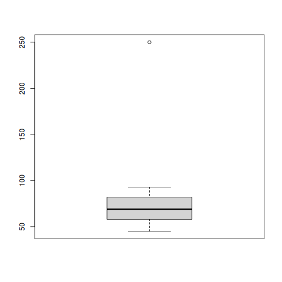
In Python, python/10_missing_outliers.py:
OUTPUT
MISSING VALUES R: sum(is.na(x)) ; which(is.na(x))
3 of 20 missing (15%)
at positions (1-based, as R reports): [3, 7, 20]
IMPUTATION strategies
mean imputation -> fill with 79.35
median imputation -> fill with 69.00
the two differ by 10.35 because the 250 drags the mean
-> with an outlier present, MEDIAN imputation is the safer choice
OUTLIERS -- IQR rule R: boxplot(x)$out
Q1=58.00 Q3=82.00 IQR=24.00
fences = [22.00, 118.00]
outliers: [250]
OUTLIERS -- z-score rule (|z| > 3)
outliers: [250]
z for 250 = 3.677
Both rules caught it here. Now MASKING, with a second outlier:
with 250 AND 260 present: sd rises from 46.40 to 61.97
z-score rule flags: NOTHING
IQR rule flags: [250, 260]
That is masking: each outlier inflates the sd enough to pull the
other back inside 3 standard deviations, so the z-score rule sees
neither. Quartiles cannot be moved by extreme values, so the IQR
rule still flags both. Prefer the IQR rule when outliers may cluster.
IQR caught both; the z-score rule was masked ✓
Corrected: the comments gave the mean and median, without the missing values, as 79.06 and 68.00. R and the Python equivalent both give 79.35 and 69.00.
RESULT
3 of the 20 values (15%) are missing. Median imputation, 69, is the safer choice, as the 250 pulls the mean up to 79.35. Both rules find the 250 (fences 22 and 118; z = 3.677); with a second outlier, only the IQR rule finds them.
Parse, format, take apart and do arithmetic on dates, and sort them.
Handle dates in base R and with lubridate, and see why dates must not be stored as text.
In R, 11_dates.R:
In Python, python/11_dates.py:
In R, 11_dates.R:
# =====================================================================
# Run with R 4.3.3 (Rscript --vanilla). What it prints, and the plots it
# draws, are on the lab page, and tools/data-science/run_r_equivalents.py
# runs it again. (Until October 2026 R could not be installed where these
# labs are checked, so this file was desk-checked only; every number in its
# comments has since been checked against R's own output.)
# =====================================================================
# Experiment 11: Working with dates and times
# Python equivalent: python/11_dates.py
# --- BASE R ---
# Step 1: Make dates in base R, and format them
d <- as.Date("2026-08-26") # ISO is the safe default
d2 <- as.Date("26/08/2026", format = "%d/%m/%Y")
Sys.Date(); Sys.time()
format(d, "%d-%m-%Y") # "26-08-2026"
format(d, "%d %B %Y") # "26 August 2026"
weekdays(d); months(d)
# Step 2: Do arithmetic on dates
d + 30 # date arithmetic works directly
difftime(as.Date("2026-12-25"), d, units = "days") # 121 days
# --- lubridate: much easier ---
# Step 3: Do the same with lubridate
library(lubridate)
ymd("2026-08-26"); dmy("26-08-2026"); mdy("08-26-2026")
year(d); month(d); day(d); wday(d, label = TRUE)
d + days(30); d + months(1); d + years(1)
d %m+% months(1) # SAFE month addition
# 31 Jan %m+% months(1) gives 28 Feb, not an invalid 31 Feb.
# --- WHY DATES MUST NOT BE STORED AS TEXT ---
# Step 4: Sort dates as text and as dates
as_text <- c("10/01/2026", "02/01/2026", "21/12/2025")
sort(as_text)
# "02/01/2026" "10/01/2026" "21/12/2025"
# ALPHABETICAL: the 2025 date sorts LAST. This is wrong and silent.
as_dates <- dmy(as_text)
sort(as_dates)
# "2025-12-21" "2026-01-02" "2026-01-10" <- correct chronological order
# Same lesson as Course 5: a date column stored as VARCHAR sorts and compares
# alphabetically, which is almost never what you want.
# --- FORMAT CODES (also used by format() in base R) ---
# %Y 4-digit year %y 2-digit year %m month number
# %B full month %b abbreviated %d day of month
# %A full weekday %a abbreviated %H:%M:%S timeIn Python, python/11_dates.py:
"""Experiment 11 (Python equivalent) -- working with dates.
R version: ../11_dates.R (as.Date, format, lubridate)
"""
from datetime import date, datetime, timedelta
if __name__ == "__main__":
# Step 1: Parse the dates
print("PARSING R: as.Date('2026-08-26')")
d = date.fromisoformat("2026-08-26")
print(f" ISO '2026-08-26' -> {d}")
d2 = datetime.strptime("26/08/2026", "%d/%m/%Y").date()
print(f" DD/MM/YYYY '26/08/2026' -> {d2} R: format='%d/%m/%Y'")
print(f" same date: {d == d2}")
# Step 2: Take a date apart
print("\nCOMPONENTS R: lubridate::year(), month(), day()")
print(f" year={d.year} month={d.month} day={d.day}")
print(f" weekday = {d.strftime('%A')} R: wday(d, label=TRUE)")
print(f" day of year = {d.timetuple().tm_yday}")
print(f" ISO week = {d.isocalendar().week}")
# Step 3: Do arithmetic on dates
print("\nARITHMETIC R: d + 30 ; difftime()")
print(f" d + 30 days = {d + timedelta(days=30)}")
print(f" d - 7 days = {d - timedelta(days=7)}")
later = date.fromisoformat("2026-12-25")
print(f" days to {later} = {(later - d).days}")
# Step 4: Format them
print("\nFORMATTING R: format(d, '%d %B %Y')")
for fmt, label in (("%d-%m-%Y", "DD-MM-YYYY"), ("%d %B %Y", "long"),
("%b %d, %Y", "abbreviated"), ("%Y-%m-%d", "ISO")):
print(f" {label:<12} {d.strftime(fmt)}")
# Step 5: Sort dates as text and as dates
print("\nWHY DATES MUST NOT BE STRINGS")
as_text = ["10/01/2026", "02/01/2026", "21/12/2025"]
as_dates = [datetime.strptime(x, "%d/%m/%Y").date() for x in as_text]
print(f" sorted as text : {sorted(as_text)}")
print(f" sorted as dates: {[str(x) for x in sorted(as_dates)]}")
print(" Text sorting puts 02/01 before 10/01 before 21/12 -- alphabetical,")
print(" not chronological. The 2025 date ends up LAST. This is exactly the")
print(" bug that makes date columns stored as VARCHAR dangerous (Course 5).")
assert sorted(as_dates)[0].year == 2025, "chronological order must start in 2025"
assert sorted(as_text)[0].startswith("02"), "text order must start with 02"
print("\n demonstrated: text order and date order genuinely differ ✓")In R, 11_dates.R:
OUTPUT
[1] "2026-10-04"
[1] "2026-10-04 12:00:00 UTC"
[1] "26-08-2026"
[1] "26 August 2026"
[1] "Wednesday"
[1] "August"
[1] "2026-09-25"
Time difference of 121 days
Attaching package: ‘lubridate’
The following objects are masked from ‘package:base’:
date, intersect, setdiff, union
[1] "2026-08-26"
[1] "2026-08-26"
[1] "2026-08-26"
[1] 2026
[1] 8
[1] 26
[1] Wed
Levels: Sun < Mon < Tue < Wed < Thu < Fri < Sat
[1] "2026-09-25"
[1] "2026-09-26"
[1] "2027-08-26"
[1] "2026-09-26"
[1] "02/01/2026" "10/01/2026" "21/12/2025"
[1] "2025-12-21" "2026-01-02" "2026-01-10"
In Python, python/11_dates.py:
OUTPUT
PARSING R: as.Date('2026-08-26')
ISO '2026-08-26' -> 2026-08-26
DD/MM/YYYY '26/08/2026' -> 2026-08-26 R: format='%d/%m/%Y'
same date: True
COMPONENTS R: lubridate::year(), month(), day()
year=2026 month=8 day=26
weekday = Wednesday R: wday(d, label=TRUE)
day of year = 238
ISO week = 35
ARITHMETIC R: d + 30 ; difftime()
d + 30 days = 2026-09-25
d - 7 days = 2026-08-19
days to 2026-12-25 = 121
FORMATTING R: format(d, '%d %B %Y')
DD-MM-YYYY 26-08-2026
long 26 August 2026
abbreviated Aug 26, 2026
ISO 2026-08-26
WHY DATES MUST NOT BE STRINGS
sorted as text : ['02/01/2026', '10/01/2026', '21/12/2025']
sorted as dates: ['2025-12-21', '2026-01-02', '2026-01-10']
Text sorting puts 02/01 before 10/01 before 21/12 -- alphabetical,
not chronological. The 2025 date ends up LAST. This is exactly the
bug that makes date columns stored as VARCHAR dangerous (Course 5).
demonstrated: text order and date order genuinely differ ✓
The first two lines are today's date and time: the output shown was made with the clock set to 4 October 2026, 12:00 UTC.
RESULT
26 August 2026 is a Wednesday, and 121 days before Christmas. Sorted as text, 21/12/2025 comes last; sorted as dates, first.
Draw a scatter plot, a bar chart, a column chart, a histogram and boxplots of the students' data with ggplot2.
Build charts with ggplot2's grammar of layers.
# =====================================================================
# Run with R 4.3.3 (Rscript --vanilla). What it prints, and the plots it
# draws, are on the lab page, and tools/data-science/run_r_equivalents.py
# runs it again. (Until October 2026 R could not be installed where these
# labs are checked, so this file was desk-checked only; every number in its
# comments has since been checked against R's own output.)
# =====================================================================
# Experiment 12: Visualise data with ggplot2
# No Python equivalent -- this demonstrates ggplot2's grammar specifically.
library(ggplot2)
# Step 1: Make the students data frame
students <- data.frame(
name = c("Ananya","Bhavana","Charan","Divya","Eshwar",
"Fiona","Gopal","Harika","Ismail","Jyothi"),
section = c("A","A","B","B","A","C","C","B","A","C"),
gender = c("F","F","M","F","M","F","M","F","M","F"),
hours = c(9, 5, 11, 4, 7, 8, 3, 10, 6, 2),
marks = c(85, 62, 91, 55, 74, 79, 48, 88, 68, 41)
)
# --- SCATTER: two numeric variables ---
# Step 2: Draw a scatter plot with a fitted line
ggplot(students, aes(x = hours, y = marks, colour = section)) +
geom_point(size = 3, alpha = 0.8) +
geom_smooth(method = "lm", se = TRUE, colour = "grey40") +
labs(title = "Marks against study hours",
x = "Hours studied per week", y = "Marks out of 100",
colour = "Section") +
theme_minimal()
# --- BAR: counts per category ---
# Step 3: Draw a bar chart of counts
ggplot(students, aes(x = section, fill = section)) +
geom_bar() + # geom_bar COUNTS rows for you
labs(title = "Students per section") +
theme_minimal() + theme(legend.position = "none")
# --- COLUMN: a value you already have ---
# Step 4: Draw a column chart of means
avg <- aggregate(marks ~ section, data = students, FUN = mean)
ggplot(avg, aes(x = section, y = marks, fill = section)) +
geom_col() + # geom_col uses YOUR value as the height
labs(title = "Mean marks per section")
# geom_bar() vs geom_col() is the classic exam question:
# geom_bar default stat = "count" -> it counts rows
# geom_col default stat = "identity" -> it uses your y value
# Reaching for geom_bar when you already have the value gives bars of height 1.
# --- HISTOGRAM: distribution of one numeric variable ---
# Step 5: Draw a histogram
ggplot(students, aes(x = marks)) +
geom_histogram(bins = 6, fill = "#1e7fbf", colour = "white") +
labs(title = "Distribution of marks")
# --- BOXPLOT: distribution by group, with outliers ---
# Step 6: Draw boxplots, split by gender
ggplot(students, aes(x = section, y = marks, fill = section)) +
geom_boxplot(alpha = 0.7, outlier.colour = "red") +
facet_wrap(~ gender) + # small multiples
labs(title = "Marks by section", subtitle = "Split by gender") +
theme_minimal() + theme(legend.position = "none")
# NOTE for boxplots: fill = interior, colour = outline. Using colour where you
# meant fill gives an outlined but empty box.
# --- EXPORT ---
# Step 7: Save a plot as PNG and PDF
p <- ggplot(students, aes(hours, marks)) + geom_point()
ggsave("marks_plot.png", plot = p, width = 8, height = 5, dpi = 300)
ggsave("marks_plot.pdf", plot = p, width = 8, height = 5) # vector, for print
# Always pass plot = explicitly. ggsave() otherwise saves the LAST plot
# displayed, which in a script is rarely the one you meant.
# LAYERS COMBINE WITH +, NOT %>%. Mixing them is the commonest ggplot2 error.OUTPUT
`geom_smooth()` using formula = 'y ~ x'
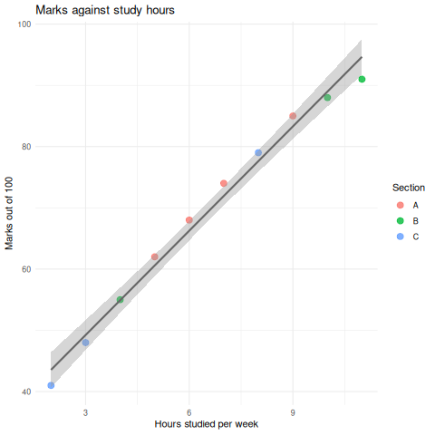
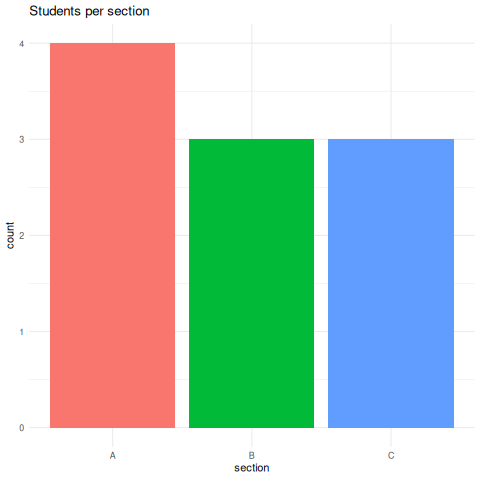
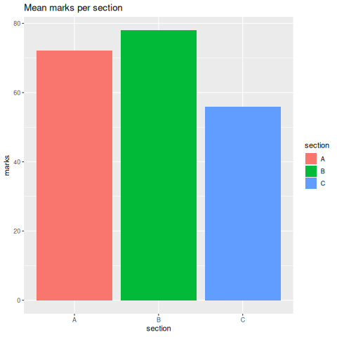
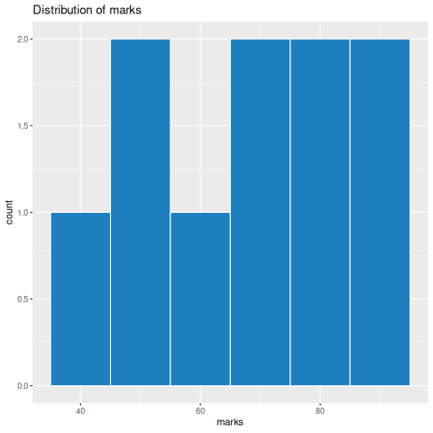
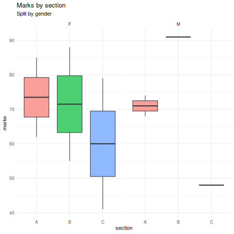
The five plots are in the order the script draws them. The one line it prints is ggplot2's
note that geom_smooth() fitted a straight line. The two saved files, marks_plot.png and
marks_plot.pdf, are not shown.
RESULT
All five charts draw; geom_bar() counts the students in each section, and geom_col() plots the mean marks given to it.
Segment 60 customers into three clusters by income and age.
Cluster with K-Means in R, choose k, and see why the data must be scaled first.
In R, 13_kmeans.R:
In Python, python/13_kmeans.py:
SCALING IS THE WHOLE EXPERIMENT
The lab data has an income:age variance ratio of about 3.5 billion to 1.
Without scale(), K-Means clusters on income alone and age contributes nothing
measurable. Run it both ways and compare table(km$cluster, km_raw$cluster) —
seeing the two solutions disagree is more convincing than being told they will.
In R, 13_kmeans.R:
# =====================================================================
# Run with R 4.3.3 (Rscript --vanilla). What it prints, and the plots it
# draws, are on the lab page, and tools/data-science/run_r_equivalents.py
# runs it again. (Until October 2026 R could not be installed where these
# labs are checked, so this file was desk-checked only; every number in its
# comments has since been checked against R's own output.)
# =====================================================================
# Experiment 13: K-Means clustering
# Python equivalent: python/13_kmeans.py
# Step 1: Make the customer data, after setting the seed
set.seed(42) # ALWAYS, or your clusters differ on every run
customers <- data.frame(
income = c(rnorm(20, 300000, 40000),
rnorm(20, 900000, 60000),
rnorm(20, 1500000, 80000)),
age = c(rnorm(20, 28, 4), rnorm(20, 45, 5), rnorm(20, 38, 6))
)
# --- SCALING IS MANDATORY ---
# income spans ~1,200,000; age spans ~40. Euclidean distance is therefore
# driven almost entirely by income, and age contributes nothing.
# The variance ratio here is about 3,500,000,000 : 1 (var(customers$income) /
# var(customers$age) is 3.48 billion). [Corrected: this said 4,000,000,000.]
# Step 2: Scale it, and cluster into three
scaled <- scale(customers)
km <- kmeans(scaled, centers = 3, nstart = 25)
# nstart = 25 runs the algorithm 25 times from different random starts and
# keeps the best. K-Means converges to a LOCAL optimum that depends on
# initialisation, so a single run can be poor.
# Step 3: Read the clusters
km$cluster # cluster assignment per observation
km$centers # centroids, in SCALED units
km$size # observations per cluster
km$tot.withinss # total within-cluster sum of squares
km$betweenss / km$totss # proportion of variance explained
# Step 4: Profile the clusters, and plot them
customers$cluster <- factor(km$cluster)
aggregate(. ~ cluster, data = customers, FUN = mean) # profile in REAL units
plot(customers$income, customers$age, col = km$cluster, pch = 19,
xlab = "Annual income", ylab = "Age", main = "Customer segments")
# --- CHOOSING k: the elbow method ---
# Step 5: Choose k by the elbow method
wss <- sapply(1:10, function(k) kmeans(scaled, k, nstart = 10)$tot.withinss)
plot(1:10, wss, type = "b", pch = 19,
xlab = "Number of clusters k", ylab = "Within-cluster sum of squares")
# WSS always falls as k rises -- at k = n it is zero. The "elbow" is where
# extra clusters stop buying much.
# --- A less subjective alternative: the silhouette ---
# library(cluster)
# sil <- silhouette(km$cluster, dist(scaled)); mean(sil[, 3])
# COMPARE: without scaling, the clustering is driven by income alone.
# Step 6: Cluster without scaling, and compare
km_raw <- kmeans(customers[, 1:2], centers = 3, nstart = 25)
table(km$cluster, km_raw$cluster) # the two solutions differIn Python, python/13_kmeans.py:
"""Experiment 13 (Python equivalent) -- K-Means clustering.
R version: ../13_kmeans.R (kmeans(scale(df), centers = 3, nstart = 25))
Includes the scaling demonstration from Unit 4: the same data clustered with
and without scale(), to show that forgetting it changes the answer.
"""
import numpy as np
from sklearn.cluster import KMeans
from sklearn.preprocessing import StandardScaler
from sklearn.metrics import silhouette_score
# Step 1: Make the customer data, from a seeded generator
RNG = np.random.default_rng(42)
# Customers: annual income (rupees) and age. Deliberately different scales.
income = np.concatenate([RNG.normal(3_00_000, 40_000, 20),
RNG.normal(9_00_000, 60_000, 20),
RNG.normal(15_00_000, 80_000, 20)])
age = np.concatenate([RNG.normal(28, 4, 20), RNG.normal(45, 5, 20),
RNG.normal(38, 6, 20)])
X = np.column_stack([income, age])
def fit(data, k=3):
km = KMeans(n_clusters=k, n_init=25, random_state=42)
labels = km.fit_predict(data)
return km, labels
if __name__ == "__main__":
print("K-MEANS R: kmeans(scale(df), 3, nstart = 25)")
print(f" {X.shape[0]} customers, 2 features")
print(f" income range {income.min():,.0f} to {income.max():,.0f}")
print(f" age range {age.min():.0f} to {age.max():.0f}")
# Step 2: Cluster without scaling
print("\nWITHOUT scaling")
km_raw, lab_raw = fit(X)
print(f" silhouette = {silhouette_score(X, lab_raw):.4f}")
for c in range(3):
m = X[lab_raw == c]
print(f" cluster {c}: n={len(m):2d} mean income={m[:,0].mean():>10,.0f}"
f" mean age={m[:,1].mean():5.1f}")
# Step 3: Cluster with scaling
print("\nWITH scaling R: scale() before kmeans()")
Xs = StandardScaler().fit_transform(X)
km_s, lab_s = fit(Xs)
print(f" silhouette = {silhouette_score(Xs, lab_s):.4f}")
for c in range(3):
m = X[lab_s == c]
print(f" cluster {c}: n={len(m):2d} mean income={m[:,0].mean():>10,.0f}"
f" mean age={m[:,1].mean():5.1f}")
# Step 4: Choose k by the elbow method
print("\nELBOW METHOD R: sapply(1:10, ...$tot.withinss)")
for k in range(1, 8):
km = KMeans(n_clusters=k, n_init=10, random_state=42).fit(Xs)
bar = "#" * int(km.inertia_ / 6)
print(f" k={k} WSS={km.inertia_:7.2f} {bar}")
# Step 5: Compare the two clusterings, and the variances
agree = (lab_raw == lab_s).mean()
best_agree = max(agree, 1 - agree)
print(f"\n Unscaled and scaled clusterings agree on {best_agree:.0%} of points"
if best_agree < 1 else "\n Both clusterings agree here")
print(" With this data the income separation is so wide that both find it,")
print(" but the unscaled version is driven by income ALONE -- age contributes")
print(" essentially nothing, because a 20-year age gap is 20 units against an")
print(" income gap of 600,000. Scaling is what lets age matter at all.")
var_ratio = income.var() / age.var()
print(f"\n variance ratio income:age = {var_ratio:,.0f} : 1")
assert var_ratio > 1000, "the scale problem must be real for the point to stand"
print(" that ratio is why scale() is mandatory, not optional ✓")In R, 13_kmeans.R:
OUTPUT
[1] 1 1 1 1 1 1 1 1 1 1 1 1 1 1 1 1 1 1 1 1 3 3 3 3 3 3 3 3 3 3 3 3 3 3 3 3 3 3
[39] 3 3 2 2 2 3 2 2 2 2 2 2 2 2 2 2 2 2 2 3 2 2
income age
1 -1.18965363 -1.04002216
2 1.22234331 -0.09472455
3 0.08140423 1.02297659
[1] 20 18 22
[1] 17.83747
[1] 0.848835
cluster income age
1 1 307676.8 28.64240
2 2 1502749.6 36.58546
3 3 937448.2 45.97717
1 2 3
1 0 20 0
2 18 0 0
3 2 0 20
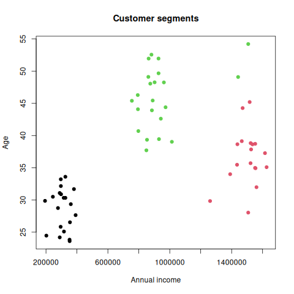
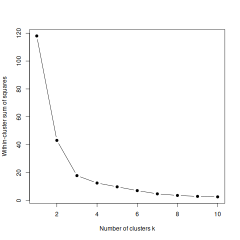
In Python, python/13_kmeans.py:
OUTPUT
K-MEANS R: kmeans(scale(df), 3, nstart = 25)
60 customers, 2 features
income range 221,959 to 1,619,595
age range 21 to 48
WITHOUT scaling
silhouette = 0.9086
cluster 0: n=20 mean income= 906,568 mean age= 43.2
cluster 1: n=20 mean income= 298,683 mean age= 27.6
cluster 2: n=20 mean income= 1,509,546 mean age= 37.3
WITH scaling R: scale() before kmeans()
silhouette = 0.6446
cluster 0: n=19 mean income= 1,513,694 mean age= 36.8
cluster 1: n=20 mean income= 298,683 mean age= 27.6
cluster 2: n=21 mean income= 931,528 mean age= 43.4
ELBOW METHOD R: sapply(1:10, ...$tot.withinss)
k=1 WSS= 120.00 ####################
k=2 WSS= 37.48 ######
k=3 WSS= 15.97 ##
k=4 WSS= 11.17 #
k=5 WSS= 8.00 #
k=6 WSS= 5.82
k=7 WSS= 3.99
Unscaled and scaled clusterings agree on 65% of points
With this data the income separation is so wide that both find it,
but the unscaled version is driven by income ALONE -- age contributes
essentially nothing, because a 20-year age gap is 20 units against an
income gap of 600,000. Scaling is what lets age matter at all.
variance ratio income:age = 4,363,697,116 : 1
that ratio is why scale() is mandatory, not optional ✓
Here the two solutions disagree on 2 of the 60 customers: the income groups are far enough apart that income alone nearly finds them. Corrected: the ratio was given as 4 billion. R's data gives 3.48 billion; the Python equivalent's own random data gives 4.36 billion.
RESULT
The three clusters have 20, 18 and 22 customers, and explain 85% of the variance. They average about 3.1, 15.0 and 9.4 lakh rupees, at ages 29, 37 and 46.
Evaluate a classifier from its confusion matrix (TP 80, FP 20, FN 40, TN 860), and draw an ROC curve.
Compute and read a classifier's metrics with caret and pROC, and see the accuracy paradox.
In R, 14_evaluation.R:
In Python, python/14_evaluation.py:
In R, 14_evaluation.R:
# =====================================================================
# Run with R 4.3.3 (Rscript --vanilla). What it prints, and the plots it
# draws, are on the lab page, and tools/data-science/run_r_equivalents.py
# runs it again. (Until October 2026 R could not be installed where these
# labs are checked, so this file was desk-checked only; every number in its
# comments has since been checked against R's own output.)
# =====================================================================
# Experiment 14: Confusion matrix, accuracy and ROC
# Python equivalent: python/14_evaluation.py
# Same counts as Course 6 Unit 4 Problem 1: TP=80 FP=20 FN=40 TN=860
library(caret); library(pROC)
# Step 1: Make the actual and predicted labels
actual <- factor(c(rep(1, 120), rep(0, 880)))
predicted <- factor(c(rep(1, 80), rep(0, 40), rep(1, 20), rep(0, 860)))
# Step 2: Build the confusion matrix and its metrics
cm <- confusionMatrix(predicted, actual, positive = "1")
cm
# Accuracy : 0.9400
# Sensitivity : 0.6667 <- RECALL
# Specificity : 0.9773
# Pos Pred Val: 0.8000 <- PRECISION
# F1 : 0.7273
cm$table # the confusion matrix itself
cm$byClass # every derived metric
# THE ACCURACY PARADOX:
# 88% of these patients are healthy, so "always predict healthy" already
# scores 0.88. This model's 0.94 beats that by only 0.06 -- and it MISSES
# 40 of the 120 real cases. Accuracy alone conceals that entirely.
# --- ROC and AUC: need SCORES, not hard labels ---
# probs <- predict(model, test, type = "prob")[, "1"]
# Step 3: Make scores for the ROC curve
set.seed(42)
probs <- ifelse(actual == 1, rbeta(1000, 5, 2), rbeta(1000, 2, 5))
# Step 4: Draw the ROC curve, and find the AUC
r <- roc(actual, probs)
auc(r) # ~0.96
plot(r, main = "ROC curve"); abline(a = 0, b = 1, lty = 2)
# AUC is the probability that the model ranks a random POSITIVE above a
# random NEGATIVE. 0.5 is the diagonal -- no better than guessing.
# Its advantage over accuracy is that it is THRESHOLD-INDEPENDENT.
# Step 5: Find the best threshold
coords(r, "best", ret = c("threshold", "sensitivity", "specificity"))In Python, python/14_evaluation.py:
"""Experiment 14 (Python equivalent) -- confusion matrix, accuracy, ROC.
R version: ../14_evaluation.R (caret::confusionMatrix, pROC::roc)
Reproduces the worked example from Course 6 Unit 4 practice problem 1, so the
notes and the code agree.
"""
import numpy as np
from sklearn.metrics import (confusion_matrix, accuracy_score, precision_score,
recall_score, f1_score, roc_auc_score, roc_curve)
# The exact counts from Unit 4 Problem 1: TP=80, FP=20, FN=40, TN=860
# Step 1: Make the labels from the Unit 4 counts
y_true = np.array([1] * 120 + [0] * 880)
y_pred = np.array([1] * 80 + [0] * 40 + [1] * 20 + [0] * 860)
def metrics(y_true, y_pred):
tn, fp, fn, tp = confusion_matrix(y_true, y_pred).ravel()
return dict(
tp=tp, fp=fp, fn=fn, tn=tn,
accuracy=(tp + tn) / (tp + tn + fp + fn),
precision=tp / (tp + fp),
recall=tp / (tp + fn),
specificity=tn / (tn + fp),
f1=2 * tp / (2 * tp + fp + fn),
)
if __name__ == "__main__":
# Step 2: Build the confusion matrix and its metrics
m = metrics(y_true, y_pred)
print("CONFUSION MATRIX R: caret::confusionMatrix()")
print(f" Predicted + Predicted -")
print(f" Actual + {m['tp']:>10} {m['fn']:>11}")
print(f" Actual - {m['fp']:>10} {m['tn']:>11}")
print("\nMETRICS")
for k in ("accuracy", "precision", "recall", "specificity", "f1"):
print(f" {k:<12} {m[k]:.4f}")
print(f"\n sklearn cross-check:")
print(f" accuracy {accuracy_score(y_true, y_pred):.4f}")
print(f" precision {precision_score(y_true, y_pred):.4f}")
print(f" recall {recall_score(y_true, y_pred):.4f}")
print(f" f1 {f1_score(y_true, y_pred):.4f}")
# Step 3: Compare with the trivial baseline
baseline = (y_true == 0).mean()
print(f"\n THE ACCURACY PARADOX")
print(f" accuracy of this model = {m['accuracy']:.4f}")
print(f" accuracy of 'always predict 0' = {baseline:.4f}")
print(f" the model beats the trivial baseline by only "
f"{m['accuracy'] - baseline:.4f}")
print(f" but recall is {m['recall']:.3f} -- it MISSES "
f"{m['fn']} of {m['tp']+m['fn']} real cases")
# Step 4: Make scores, and find the AUC
# ROC needs scores, not hard labels.
rng = np.random.default_rng(42)
scores = np.where(y_true == 1,
rng.beta(5, 2, size=len(y_true)),
rng.beta(2, 5, size=len(y_true)))
auc = roc_auc_score(y_true, scores)
fpr, tpr, _ = roc_curve(y_true, scores)
print(f"\nROC / AUC R: pROC::roc(); auc()")
print(f" AUC = {auc:.4f}")
print(" (AUC is the probability the model ranks a random positive")
print(" above a random negative -- 0.5 would be random guessing)")
# Step 5: Check against Unit 4 Problem 1
assert abs(m["accuracy"] - 0.940) < 1e-9
assert abs(m["precision"] - 0.800) < 1e-9
assert abs(m["recall"] - 2/3) < 1e-9
assert abs(m["f1"] - 0.727) < 1e-3
print("\n matches Unit 4 Problem 1 exactly ✓")In R, 14_evaluation.R:
OUTPUT
Loading required package: ggplot2
Loading required package: lattice
Type 'citation("pROC")' for a citation.
Attaching package: ‘pROC’
The following objects are masked from ‘package:stats’:
cov, smooth, var
Confusion Matrix and Statistics
Reference
Prediction 0 1
0 860 40
1 20 80
Accuracy : 0.94
95% CI : (0.9234, 0.9539)
No Information Rate : 0.88
P-Value [Acc > NIR] : 1.343e-10
Kappa : 0.6939
Mcnemar's Test P-Value : 0.01417
Sensitivity : 0.6667
Specificity : 0.9773
Pos Pred Value : 0.8000
Neg Pred Value : 0.9556
Prevalence : 0.1200
Detection Rate : 0.0800
Detection Prevalence : 0.1000
Balanced Accuracy : 0.8220
'Positive' Class : 1
Reference
Prediction 0 1
0 860 40
1 20 80
Sensitivity Specificity Pos Pred Value
0.6666667 0.9772727 0.8000000
Neg Pred Value Precision Recall
0.9555556 0.8000000 0.6666667
F1 Prevalence Detection Rate
0.7272727 0.1200000 0.0800000
Detection Prevalence Balanced Accuracy
0.1000000 0.8219697
Setting levels: control = 0, case = 1
Setting direction: controls < cases
Area under the curve: 0.9633
threshold sensitivity specificity
1 0.519149 0.9083333 0.9159091
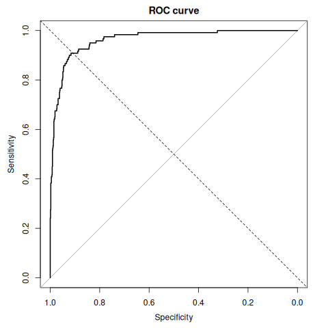
In Python, python/14_evaluation.py:
OUTPUT
CONFUSION MATRIX R: caret::confusionMatrix()
Predicted + Predicted -
Actual + 80 40
Actual - 20 860
METRICS
accuracy 0.9400
precision 0.8000
recall 0.6667
specificity 0.9773
f1 0.7273
sklearn cross-check:
accuracy 0.9400
precision 0.8000
recall 0.6667
f1 0.7273
THE ACCURACY PARADOX
accuracy of this model = 0.9400
accuracy of 'always predict 0' = 0.8800
the model beats the trivial baseline by only 0.0600
but recall is 0.667 -- it MISSES 40 of 120 real cases
ROC / AUC R: pROC::roc(); auc()
AUC = 0.9652
(AUC is the probability the model ranks a random positive
above a random negative -- 0.5 would be random guessing)
matches Unit 4 Problem 1 exactly ✓
Accuracy, 0.94, beats always predicting "healthy", 0.88, by only 0.06, and the model misses 40 of the 120 real cases. The AUC is for scores simulated to separate the classes.
RESULT
Accuracy 0.94, sensitivity (recall) 0.6667, specificity 0.9773, precision 0.80 and F1 0.7273. The AUC is 0.9633, and the best threshold is 0.519.
Clean five course reviews, count their terms, draw a word cloud, and weight the terms by TF-IDF.
Mine text in R with tm: clean it, build a term-document matrix, and weight it.
In R, 15_text_mining.R:
In Python, python/15_text_mining.py:
In R, 15_text_mining.R:
# =====================================================================
# Run with R 4.3.3 (Rscript --vanilla). What it prints, and the plots it
# draws, are on the lab page, and tools/data-science/run_r_equivalents.py
# runs it again. (Until October 2026 R could not be installed where these
# labs are checked, so this file was desk-checked only; every number in its
# comments has since been checked against R's own output.)
# =====================================================================
# Experiment 15: Text mining and word cloud
# Python equivalent: python/15_text_mining.py
library(tm); library(wordcloud); library(RColorBrewer)
# Step 1: Enter the reviews
reviews <- c(
"The data science course is excellent and the teaching is excellent",
"Excellent course with excellent practical data examples",
"The practical sessions are useful but the course is fast",
"Data analysis practical work is the best part of this course",
"Teaching on this course is good and the data examples are practical")
# --- THE PREPROCESSING PIPELINE -- each step earns marks ---
# Step 2: Clean the text: case, punctuation, numbers, stop words, stems
corpus <- Corpus(VectorSource(reviews))
corpus <- tm_map(corpus, content_transformer(tolower)) # case-fold
corpus <- tm_map(corpus, removePunctuation) # "data." -> "data"
corpus <- tm_map(corpus, removeNumbers)
corpus <- tm_map(corpus, removeWords, stopwords("english")) # the, is, and...
corpus <- tm_map(corpus, stripWhitespace)
corpus <- tm_map(corpus, stemDocument) # running -> run
# --- TERM-DOCUMENT MATRIX ---
# Step 3: Count the terms
tdm <- TermDocumentMatrix(corpus)
m <- as.matrix(tdm)
freq <- sort(rowSums(m), decreasing = TRUE)
head(freq, 10)
inspect(tdm)
# --- WORD CLOUD ---
# Step 4: Draw the word cloud and a bar chart
set.seed(42)
wordcloud(names(freq), freq, min.freq = 1, max.words = 100,
random.order = FALSE, colors = brewer.pal(8, "Dark2"))
barplot(head(freq, 8), las = 2, col = "#1e7fbf",
main = "Most frequent terms")
# --- TF-IDF: weight by how DISTINCTIVE a term is ---
# Step 5: Weight the terms by TF-IDF
tdm_tfidf <- TermDocumentMatrix(corpus,
control = list(weighting = weightTfIdf))
# TF-IDF(t,d) = TF(t,d) * log(N / DF(t))
#
# "course" appears in all 5 documents, so DF = N = 5, log(5/5) = 0, and its
# TF-IDF is EXACTLY ZERO. A term present everywhere distinguishes nothing.
# That is the whole point of the weighting, and it is why TF-IDF beats raw
# counts for finding what a document is actually ABOUT.
# Step 6: Find the frequent and the associated terms
findFreqTerms(tdm, lowfreq = 3)
findAssocs(tdm, "practic", 0.5) # note the STEM, not "practical"
# STEMMING vs LEMMATISATION (a standard two-mark question):
# stemming chops suffixes mechanically; may give a non-word
# "studies" -> "studi" fast
# lemmatisation uses vocabulary and grammar; returns a real word
# "studies" -> "study" slower, more accurateIn Python, python/15_text_mining.py:
"""Experiment 15 (Python equivalent) -- text mining and word frequency.
R version: ../15_text_mining.R (tm + wordcloud)
No word cloud is drawn here -- the frequencies that WOULD drive one are what
matter, and those are verifiable. The R script draws the cloud.
"""
import math, re
from collections import Counter
STOPWORDS = {
"the", "is", "at", "which", "on", "a", "an", "and", "or", "but", "in",
"with", "to", "for", "of", "as", "by", "that", "this", "it", "from",
"be", "are", "was", "were", "has", "have", "had", "i", "you", "we",
}
REVIEWS = [
"The data science course is excellent and the teaching is excellent",
"Excellent course with excellent practical data examples",
"The practical sessions are useful but the course is fast",
"Data analysis practical work is the best part of this course",
"Teaching on this course is good and the data examples are practical",
]
# Note: "course" and "data" deliberately appear in EVERY review, so the TF-IDF
# demonstration below has something real to weight to zero.
def preprocess(text):
text = text.lower()
text = re.sub(r"[^a-z\s]", " ", text) # remove punctuation, digits
tokens = text.split()
return [t for t in tokens if t not in STOPWORDS and len(t) > 2]
def stem(word):
"""A crude Porter-style suffix stripper, enough to show the idea."""
for suffix in ("ing", "edly", "ed", "es", "s"):
if word.endswith(suffix) and len(word) - len(suffix) >= 3:
return word[: -len(suffix)]
return word
def term_document_matrix(docs):
tokenised = [preprocess(d) for d in docs]
vocab = sorted({t for doc in tokenised for t in doc})
return vocab, [[doc.count(t) for doc in tokenised] for t in vocab]
def tfidf(vocab, tdm, n_docs):
out = {}
for term, row in zip(vocab, tdm):
tf = sum(row)
df = sum(1 for c in row if c > 0)
out[term] = tf * math.log(n_docs / df)
return out
if __name__ == "__main__":
# Step 1: Clean the text
print("PREPROCESSING R: tm_map(corpus, ...)")
print(f" original : {REVIEWS[0]}")
print(f" cleaned : {' '.join(preprocess(REVIEWS[0]))}")
print(f" stemmed : {' '.join(stem(t) for t in preprocess(REVIEWS[0]))}")
# Step 2: Count the terms
all_tokens = [t for d in REVIEWS for t in preprocess(d)]
freq = Counter(all_tokens)
print(f"\nWORD FREQUENCY R: sort(rowSums(as.matrix(dtm)))")
print(f" {len(all_tokens)} tokens after stop-word removal, "
f"{len(freq)} unique")
for word, n in freq.most_common(8):
print(f" {word:<12} {n} {'#' * n * 3}")
vocab, tdm = term_document_matrix(REVIEWS)
# Step 3: Build the term-document matrix
print(f"\nTERM-DOCUMENT MATRIX {len(vocab)} terms x {len(REVIEWS)} docs")
print(f" {'term':<12}" + "".join(f"D{i+1:<3}" for i in range(len(REVIEWS))))
for term, row in list(zip(vocab, tdm))[:6]:
print(f" {term:<12}" + "".join(f"{c:<4}" for c in row))
# Step 4: Weight the terms by TF-IDF
scores = tfidf(vocab, tdm, len(REVIEWS))
print("\nTF-IDF TF x log(N / DF)")
for term, sc in sorted(scores.items(), key=lambda kv: -kv[1])[:6]:
df = sum(1 for c in tdm[vocab.index(term)] if c > 0)
print(f" {term:<12} tf={sum(tdm[vocab.index(term)]):<3} "
f"df={df:<3} tfidf={sc:.4f}")
# Step 5: Check that a term in every document weighs zero
in_all = [t for t in vocab if all(c > 0 for c in tdm[vocab.index(t)])]
assert in_all, "the demonstration needs at least one ubiquitous term"
print(f"\n terms appearing in EVERY document: {in_all}")
for t in in_all:
print(f" '{t}' -> tf-idf = {scores[t]:.4f} (log(5/5) = 0)")
print(" A term in every document carries no discriminating information,")
print(" so TF-IDF weights it to exactly zero. That is the whole point.")
for t in in_all:
assert abs(scores[t]) < 1e-12, f"{t} should have zero tf-idf"
print("\n ubiquitous terms correctly weighted to zero ✓")In R, 15_text_mining.R:
OUTPUT
Loading required package: NLP
Loading required package: RColorBrewer
Warning message:
In tm_map.SimpleCorpus(corpus, content_transformer(tolower)) :
transformation drops documents
Warning message:
In tm_map.SimpleCorpus(corpus, removePunctuation) :
transformation drops documents
Warning message:
In tm_map.SimpleCorpus(corpus, removeNumbers) :
transformation drops documents
Warning message:
In tm_map.SimpleCorpus(corpus, removeWords, stopwords("english")) :
transformation drops documents
Warning message:
In tm_map.SimpleCorpus(corpus, stripWhitespace) :
transformation drops documents
Warning message:
In tm_map.SimpleCorpus(corpus, stemDocument) :
transformation drops documents
cours data excel practic teach exampl scienc fast session use
5 4 4 4 2 2 1 1 1 1
<<TermDocumentMatrix (terms: 15, documents: 5)>>
Non-/sparse entries: 28/47
Sparsity : 63%
Maximal term length: 7
Weighting : term frequency (tf)
Sample :
Docs
Terms 1 2 3 4 5
cours 1 1 1 1 1
data 1 1 0 1 1
exampl 0 1 0 0 1
excel 2 2 0 0 0
fast 0 0 1 0 0
practic 0 1 1 1 1
scienc 1 0 0 0 0
session 0 0 1 0 0
teach 1 0 0 0 1
use 0 0 1 0 0
Warning message:
In TermDocumentMatrix.SimpleCorpus(corpus, control = list(weighting = weightTfIdf)) :
custom functions are ignored
[1] "cours" "data" "excel" "practic"
$practic
numeric(0)
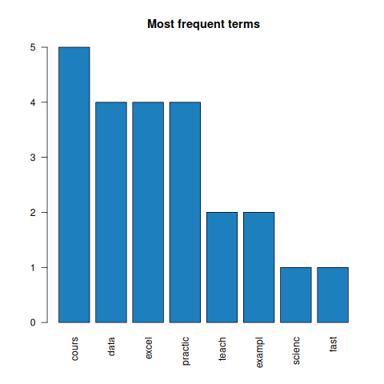
In Python, python/15_text_mining.py:
OUTPUT
PREPROCESSING R: tm_map(corpus, ...)
original : The data science course is excellent and the teaching is excellent
cleaned : data science course excellent teaching excellent
stemmed : data science course excellent teach excellent
WORD FREQUENCY R: sort(rowSums(as.matrix(dtm)))
30 tokens after stop-word removal, 15 unique
course 5 ###############
data 4 ############
excellent 4 ############
practical 4 ############
teaching 2 ######
examples 2 ######
science 1 ###
sessions 1 ###
TERM-DOCUMENT MATRIX 15 terms x 5 docs
term D1 D2 D3 D4 D5
analysis 0 0 0 1 0
best 0 0 0 1 0
course 1 1 1 1 1
data 1 1 0 1 1
examples 0 1 0 0 1
excellent 2 2 0 0 0
TF-IDF TF x log(N / DF)
excellent tf=4 df=2 tfidf=3.6652
examples tf=2 df=2 tfidf=1.8326
teaching tf=2 df=2 tfidf=1.8326
analysis tf=1 df=1 tfidf=1.6094
best tf=1 df=1 tfidf=1.6094
fast tf=1 df=1 tfidf=1.6094
terms appearing in EVERY document: ['course']
'course' -> tf-idf = 0.0000 (log(5/5) = 0)
A term in every document carries no discriminating information,
so TF-IDF weights it to exactly zero. That is the whole point.
ubiquitous terms correctly weighted to zero ✓
The "transformation drops documents" warnings are tm's, printed each time tm_map() runs
on this kind of corpus; nothing is dropped, and the matrix still has all 5 documents. Stemming
turns "excellent" into "excel", which is why "excel" is a frequent term.
RESULT
The most frequent stems are cours (5), data, excel and practic (4 each). "cours" is in every review, so its TF-IDF weight is zero.
Model the monthly airline passenger series, 1949–1960, and forecast it two years ahead.
Decompose, difference, identify, fit, check and forecast a seasonal series with ARIMA in R.
In R, 16_arima.R:
In Python, python/16_arima.py:
DIFFERENCE BEFORE YOU READ THE ACF
On the raw airline series the ACF decays slowly — the trend dominates — and the seasonality shows only as a ripple on that decay: it falls to 0.66 at lag 8 and rises again to 0.76 at lag 12. After one difference the oscillation stands out, peaking at lag 12 (0.83). Reading ACF/PACF on a trending series tells you little except "there is a trend".
In R, 16_arima.R:
# =====================================================================
# Run with R 4.3.3 (Rscript --vanilla). What it prints, and the plots it
# draws, are on the lab page, and tools/data-science/run_r_equivalents.py
# runs it again. (Until October 2026 R could not be installed where these
# labs are checked, so this file was desk-checked only; every number in its
# comments has since been checked against R's own output.)
# =====================================================================
# Experiment 16: Time series forecasting with ARIMA
# Python equivalent: python/16_arima.py (implements decomposition, differencing,
# ACF and PACF from first principles, on a series of its own)
library(forecast); library(tseries)
# Step 1: Load and plot the series, and take logs
data(AirPassengers) # the classic monthly series, 1949-1960
ap <- AirPassengers
# --- 1. LOOK AT IT FIRST ---
plot(ap, main = "Monthly airline passengers")
# The seasonal swing GROWS with the level -> MULTIPLICATIVE, so take logs.
lap <- log(ap)
plot(lap) # now the swing is roughly constant -> additive
# --- 2. DECOMPOSE ---
# Step 2: Decompose it
decomp <- decompose(ap, type = "multiplicative")
plot(decomp) # observed / trend / seasonal / random
stl(lap, s.window = "periodic") # more robust; works on the log series
# --- 3. TEST FOR STATIONARITY ---
# Step 3: Test for stationarity
adf.test(ap)
# ADF: H0 = NON-stationary (unit root)
# large p -> FAIL to reject -> the series is NOT stationary
# Here, though, p is below 0.01: adf.test() allows for a linear trend, and
# around that trend this series is stationary. [Corrected: this said the
# raw series gives a large p.]
kpss.test(ap)
# KPSS: H0 = STATIONARY -- the OPPOSITE null.
# Reading one test's p-value as though it were the other's gives exactly
# the wrong conclusion. Write the null down before interpreting.
# Here KPSS rejects (p below 0.01): the level is not constant. With ADF,
# that makes the series trend-stationary; differencing deals with both.
ndiffs(lap) # how many ordinary differences are needed
nsdiffs(lap) # how many SEASONAL differences
# --- 4. DIFFERENCE ---
# Step 4: Difference it
d1 <- diff(lap) # removes the trend
d12 <- diff(d1, lag = 12) # removes the 12-month seasonality
adf.test(d12) # now small p -> stationary
# --- 5. IDENTIFY THE ORDERS ---
# Step 5: Read the ACF and PACF
acf(ap, main = "ACF of the RAW series")
# Slow decay -- the trend swamps everything -- with the seasonality only a
# ripple on it: the ACF falls to 0.66 at lag 8 and rises again to 0.76 at
# lag 12. This is why you difference first. [Corrected: this said the decay
# is monotonic and the seasonality invisible. That is true of the Python
# version's series, not of this one.]
acf(d12, main = "ACF after differencing") # q, from where it CUTS OFF
pacf(d12, main = "PACF after differencing") # p, from where it CUTS OFF
# ACF tails off, PACF cuts off after lag p -> AR(p)
# ACF cuts off after lag q, PACF tails off -> MA(q)
# Mnemonic: PACF gives p, ACF gives q.
# --- 6. FIT ---
# Step 6: Fit the model
fit <- auto.arima(lap) # searches (p,d,q)(P,D,Q)[12] by AIC
summary(fit)
# --- 7. CHECK THE RESIDUALS -- the step students skip ---
# Step 7: Check the residuals
checkresiduals(fit)
# If the model is adequate its residuals are WHITE NOISE: no autocorrelation
# left, roughly normal, constant variance. Structure remaining in the
# residuals is signal the model failed to capture.
#
# Ljung-Box: H0 = residuals are independent.
# Here you WANT a LARGE p-value -- the opposite of most tests you have met.
# --- 8. FORECAST ---
# Step 8: Forecast two years ahead
fc <- forecast(fit, h = 24)
plot(fc)
exp(fc$mean) # back-transform from the log scale
accuracy(fit) # ME, RMSE, MAE, MAPE
# MAPE is unit-free and therefore easy to compare across series, but it
# breaks down when actual values are near zero.In Python, python/16_arima.py:
"""Experiment 16 (Python equivalent) -- time series and ARIMA fundamentals.
R version: ../16_arima.R (ts, decompose, adf.test, auto.arima, forecast)
statsmodels is not installed, so rather than call a black-box ARIMA this file
implements the pieces the syllabus actually examines -- decomposition,
differencing, stationarity, ACF and PACF -- from first principles. That is more
useful anyway: these are the calculations an exam asks you to perform by hand.
"""
import math
# 36 months of sales: level 100, upward trend, 12-month seasonality, noise.
# Built deterministically so the numbers are reproducible.
def make_series(n=36):
out = []
for t in range(n):
trend = 100 + 2.0 * t
season = 15 * math.sin(2 * math.pi * t / 12)
noise = 3 * math.sin(t * 7.13) # deterministic pseudo-noise
out.append(round(trend + season + noise, 2))
return out
SERIES = make_series()
def moving_average(v, window):
"""Centred moving average -- the trend estimate in classical decomposition."""
half = window // 2
out = [None] * len(v)
for i in range(half, len(v) - half):
if window % 2 == 0: # even window needs the 2xM smoothing
block = v[i - half:i + half + 1]
out[i] = (sum(block[1:-1]) + (block[0] + block[-1]) / 2) / window
else:
out[i] = sum(v[i - half:i + half + 1]) / window
return out
def difference(v, lag=1):
return [v[i] - v[i - lag] for i in range(lag, len(v))]
def acf(v, max_lag):
n = len(v)
m = sum(v) / n
denom = sum((x - m) ** 2 for x in v)
out = []
for k in range(1, max_lag + 1):
num = sum((v[i] - m) * (v[i - k] - m) for i in range(k, n))
out.append(num / denom)
return out
def pacf(v, max_lag):
"""PACF by the Durbin-Levinson recursion."""
r = [1.0] + acf(v, max_lag)
phi = [[0.0] * (max_lag + 1) for _ in range(max_lag + 1)]
out = []
for k in range(1, max_lag + 1):
if k == 1:
phi[1][1] = r[1]
else:
num = r[k] - sum(phi[k - 1][j] * r[k - j] for j in range(1, k))
den = 1 - sum(phi[k - 1][j] * r[j] for j in range(1, k))
phi[k][k] = num / den if den != 0 else 0.0
for j in range(1, k):
phi[k][j] = phi[k - 1][j] - phi[k][k] * phi[k - 1][k - j]
out.append(phi[k][k])
return out
def spark(values, width=40):
lo, hi = min(values), max(values)
span = hi - lo or 1
return "".join("▁▂▃▄▅▆▇█"[min(7, int((v - lo) / span * 7))] for v in values)
if __name__ == "__main__":
# Step 1: Make and show the series
print("THE SERIES R: ts(sales, frequency = 12)")
print(f" {len(SERIES)} monthly observations")
print(f" {spark(SERIES)}")
print(f" first 6: {SERIES[:6]}")
# Step 2: Find the trend by a moving average
print("\nDECOMPOSITION R: decompose(ts)")
trend = moving_average(SERIES, 12)
known = [(i, t) for i, t in enumerate(trend) if t is not None]
print(f" trend (12-month centred MA), first and last known values:")
print(f" t={known[0][0]:2d} -> {known[0][1]:7.2f}")
print(f" t={known[-1][0]:2d} -> {known[-1][1]:7.2f}")
slope = (known[-1][1] - known[0][1]) / (known[-1][0] - known[0][0])
print(f" implied slope = {slope:.3f} per month (series was built with 2.0)")
# Step 3: Difference it
print("\nSTATIONARITY BY DIFFERENCING R: diff(ts) ; ndiffs(ts)")
d1 = difference(SERIES)
for name, v in (("original", SERIES), ("differenced", d1)):
m = sum(v) / len(v)
sd = (sum((x - m) ** 2 for x in v) / (len(v) - 1)) ** 0.5
first, second = v[:len(v)//2], v[len(v)//2:]
drift = abs(sum(second)/len(second) - sum(first)/len(first))
print(f" {name:<12} mean={m:8.2f} sd={sd:6.2f} "
f"first-half vs second-half mean gap = {drift:7.2f}")
print(" A large gap between the halves' means IS non-stationarity in the")
print(" mean. Differencing collapses it, which is what d=1 achieves.")
# Step 4: Read the ACF before and after differencing
print("\nACF -- RAW SERIES R: acf(ts)")
a = acf(SERIES, 14)
for k, v in enumerate(a, 1):
print(f" lag {k:2d} {v:+.4f} {'+' * int(abs(v) * 30)}")
print(" Slow, monotonic decay and nothing else. This is the classic")
print(" signature of a TREND, and it is so dominant that the seasonality")
print(" built into this series is completely invisible here.")
print("\nACF -- DIFFERENCED SERIES R: acf(diff(ts))")
ad = acf(d1, 14)
for k, v in enumerate(ad, 1):
bar = "+" * int(abs(v) * 30)
marker = ""
if k == 12:
marker = " <- local MAXIMUM: period-12 seasonality"
elif k == 6:
marker = " <- MINIMUM: half a period out of phase"
print(f" lag {k:2d} {v:+.4f} {bar}{marker}")
print("\n 💡 THE LESSON: seasonality was NOT visible in the raw ACF, because")
print(" the trend swamped it. Only after differencing does the oscillation")
print(" appear -- negative around lag 6, peaking again at lag 12. This is")
print(" why the order of operations matters: difference FIRST, then read")
print(" the ACF and PACF. Reading them on a trending series tells you")
print(" almost nothing except 'there is a trend'.")
# Step 5: Read the PACF
print("\nPACF R: pacf(ts)")
for k, v in enumerate(pacf(SERIES, 8), 1):
print(f" lag {k:2d} {v:+.4f}")
print("\n READING THEM (Unit 5 A.4):")
print(" ACF tails off, PACF cuts off after lag p -> AR(p), p from PACF")
print(" ACF cuts off after lag q, PACF tails off -> MA(q), q from ACF")
print(" ACF decaying slowly -> difference first")
# In the DIFFERENCED series lag 12 is a local maximum and lag 6 the
# minimum -- the fingerprint of period-12 seasonality.
# Step 6: Check what the series must show
assert ad[11] > ad[10] and ad[11] > ad[12], "lag 12 must be a local maximum"
assert ad[5] == min(ad), "lag 6 must be the minimum"
# In the RAW series it decays monotonically over the first 12 lags.
assert all(a[i] > a[i + 1] for i in range(11)), "raw ACF must decay monotonically"
assert abs(slope - 2.0) < 0.4, f"recovered slope {slope} should be near 2.0"
print("\n raw ACF decays monotonically (trend); differenced ACF peaks at")
print(" lag 12 and troughs at lag 6 (seasonality); slope recovered ✓")In R, 16_arima.R:
OUTPUT
Registered S3 method overwritten by 'quantmod':
method from
as.zoo.data.frame zoo
Call:
stl(x = lap, s.window = "periodic")
Components
seasonal trend remainder
Jan 1949 -0.09164042 4.829389 -0.0192493585
Feb 1949 -0.11402828 4.830368 0.0543447685
Mar 1949 0.01586585 4.831348 0.0355884457
Apr 1949 -0.01402759 4.833377 0.0404632511
May 1949 -0.01502478 4.835406 -0.0245905300
Jun 1949 0.10978976 4.838166 -0.0426814256
Jul 1949 0.21640041 4.840927 -0.0601151688
Aug 1949 0.20960587 4.843469 -0.0558624690
Sep 1949 0.06747156 4.846011 -0.0008273977
Oct 1949 -0.07024836 4.850883 -0.0015112948
Nov 1949 -0.21352774 4.855756 0.0021630667
Dec 1949 -0.10063625 4.864586 0.0067346600
Jan 1950 -0.09164042 4.873417 -0.0368443057
Feb 1950 -0.11402828 4.883282 0.0670284530
Mar 1950 0.01586585 4.893147 0.0397474219
Apr 1950 -0.01402759 4.903156 0.0161459950
May 1950 -0.01502478 4.913166 -0.0698276070
Jun 1950 0.10978976 4.925404 -0.0312477713
Jul 1950 0.21640041 4.937643 -0.0182444833
Aug 1950 0.20960587 4.954420 -0.0282273969
Sep 1950 0.06747156 4.971197 0.0239260449
Oct 1950 -0.07024836 4.991662 -0.0310647612
Nov 1950 -0.21352774 5.012127 -0.0624008823
Dec 1950 -0.10063625 5.031094 0.0111846224
Jan 1951 -0.09164042 5.050061 0.0183131352
Feb 1951 -0.11402828 5.065044 0.0596196836
Mar 1951 0.01586585 5.080027 0.0858909418
Apr 1951 -0.01402759 5.093932 0.0138460280
May 1951 -0.01502478 5.107837 0.0546824937
Jun 1951 0.10978976 5.121064 -0.0490698826
Jul 1951 0.21640041 5.134291 -0.0573861680
Aug 1951 0.20960587 5.146131 -0.0624323009
Sep 1951 0.06747156 5.157972 -0.0105077415
Oct 1951 -0.07024836 5.169854 -0.0120089320
Nov 1951 -0.21352774 5.181735 0.0153990463
Dec 1951 -0.10063625 5.194803 0.0178207135
Jan 1952 -0.09164042 5.207871 0.0254326447
Feb 1952 -0.11402828 5.220493 0.0864920261
Mar 1952 0.01586585 5.233115 0.0137094563
Apr 1952 -0.01402759 5.244400 -0.0318757882
May 1952 -0.01502478 5.255686 -0.0311749995
Jun 1952 0.10978976 5.266916 0.0077889001
Jul 1952 0.21640041 5.278147 -0.0564679741
Aug 1952 0.20960587 5.291899 -0.0125671875
Sep 1952 0.06747156 5.305651 -0.0307885329
Oct 1952 -0.07024836 5.323035 -0.0005129219
Nov 1952 -0.21352774 5.340418 0.0206040218
Dec 1952 -0.10063625 5.355790 0.0127045234
Jan 1953 -0.09164042 5.371162 -0.0014064946
Feb 1953 -0.11402828 5.381701 0.0104415885
Mar 1953 0.01586585 5.392241 0.0557248228
Apr 1953 -0.01402759 5.398479 0.0751345805
May 1953 -0.01502478 5.404716 0.0440308724
Jun 1953 0.10978976 5.406792 -0.0235205660
Jul 1953 0.21640041 5.408869 -0.0493198945
Aug 1953 0.20960587 5.407808 -0.0116118099
Sep 1953 0.06747156 5.406747 -0.0061588541
Oct 1953 -0.07024836 5.407020 0.0150868577
Nov 1953 -0.21352774 5.407292 -0.0008072455
Dec 1953 -0.10063625 5.412628 -0.0086865700
Jan 1954 -0.09164042 5.417964 -0.0082032035
Feb 1954 -0.11402828 5.425823 -0.0753528534
Mar 1954 0.01586585 5.433683 0.0100370842
Apr 1954 -0.01402759 5.442676 -0.0036988730
May 1954 -0.01502478 5.451670 0.0186755182
Jun 1954 0.10978976 5.463574 0.0025856037
Jul 1954 0.21640041 5.475477 0.0185495056
Aug 1954 0.20960587 5.488954 -0.0183873611
Sep 1954 0.06747156 5.502431 -0.0130746073
Oct 1954 -0.07024836 5.515678 -0.0117077856
Nov 1954 -0.21352774 5.528925 -0.0021914704
Dec 1954 -0.10063625 5.543178 -0.0088199260
Jan 1955 -0.09164042 5.557431 0.0231469788
Feb 1955 -0.11402828 5.572621 -0.0075538774
Mar 1955 0.01586585 5.587810 -0.0164272509
Apr 1955 -0.01402759 5.602576 0.0061625730
May 1955 -0.01502478 5.617343 -0.0038959909
Jun 1955 0.10978976 5.631685 0.0110981305
Jul 1955 0.21640041 5.646027 0.0347266908
Aug 1955 0.20960587 5.660026 -0.0203074185
Sep 1955 0.06747156 5.674026 0.0015057273
Oct 1955 -0.07024836 5.687411 -0.0040342159
Nov 1955 -0.21352774 5.700795 -0.0192075831
Dec 1955 -0.10063625 5.713683 0.0145740752
Jan 1956 -0.09164042 5.726571 0.0140435478
Feb 1956 -0.11402828 5.738688 -0.0006422520
Mar 1956 0.01586585 5.750805 -0.0077690470
Apr 1956 -0.01402759 5.761271 -0.0010403672
May 1956 -0.01502478 5.771737 0.0053388421
Jun 1956 0.10978976 5.780581 0.0338845974
Jul 1956 0.21640041 5.789426 0.0176216235
Aug 1956 0.20960587 5.797448 -0.0031667752
Sep 1956 0.06747156 5.805470 -0.0008241663
Oct 1956 -0.07024836 5.813734 -0.0199006689
Nov 1956 -0.21352774 5.821998 -0.0063513051
Dec 1956 -0.10063625 5.831654 -0.0074325201
Jan 1957 -0.09164042 5.841310 0.0029031831
Feb 1957 -0.11402828 5.852625 -0.0314869189
Mar 1957 0.01586585 5.863941 -0.0048761755
Apr 1957 -0.01402759 5.875005 -0.0087747176
May 1957 -0.01502478 5.886069 0.0010740550
Jun 1957 0.10978976 5.894711 0.0405045167
Jul 1957 0.21640041 5.903354 0.0222834352
Aug 1957 0.20960587 5.907786 0.0289376116
Sep 1957 0.06747156 5.912218 0.0217253156
Oct 1957 -0.07024836 5.912909 0.0066639927
Nov 1957 -0.21352774 5.913600 0.0202392244
Dec 1957 -0.10063625 5.914570 0.0031777723
Jan 1958 -0.09164042 5.915539 0.0050470568
Feb 1958 -0.11402828 5.918512 -0.0424324225
Mar 1958 0.01586585 5.921485 -0.0457068326
Apr 1958 -0.01402759 5.924977 -0.0587474166
May 1958 -0.01502478 5.928470 -0.0190421600
Jun 1958 0.10978976 5.932704 0.0328523706
Jul 1958 0.21640041 5.936938 0.0431056910
Aug 1958 0.20960587 5.943328 0.0716243517
Sep 1958 0.06747156 5.949718 -0.0157750808
Oct 1958 -0.07024836 5.957409 -0.0038387222
Nov 1958 -0.21352774 5.965101 -0.0150005051
Dec 1958 -0.10063625 5.973333 -0.0526139823
Jan 1959 -0.09164042 5.981566 -0.0038213288
Feb 1959 -0.11402828 5.992040 -0.0432006658
Mar 1959 0.01586585 6.002514 -0.0120262807
Apr 1959 -0.01402759 6.015640 -0.0201986959
May 1959 -0.01502478 6.028767 0.0265120912
Jun 1959 0.10978976 6.042198 0.0049914005
Jul 1959 0.21640041 6.055628 0.0342466268
Aug 1959 0.20960587 6.065881 0.0506625860
Sep 1959 0.06747156 6.076134 -0.0058783006
Oct 1959 -0.07024836 6.084145 -0.0050832771
Nov 1959 -0.21352774 6.092156 0.0130161013
Dec 1959 -0.10063625 6.100500 0.0040231864
Jan 1960 -0.09164042 6.108844 0.0158822334
Feb 1960 -0.11402828 6.117934 -0.0351985510
Mar 1960 0.01586585 6.127024 -0.1050193083
Apr 1960 -0.01402759 6.135814 0.0116112609
May 1960 -0.01502478 6.144604 0.0273994037
Jun 1960 0.10978976 6.152986 0.0194908174
Jul 1960 0.21640041 6.161368 0.0551717057
Aug 1960 0.20960587 6.170124 0.0271500533
Sep 1960 0.06747156 6.178880 -0.0158702714
Oct 1960 -0.07024836 6.187594 0.0160525773
Nov 1960 -0.21352774 6.196307 -0.0166330133
Dec 1960 -0.10063625 6.204752 -0.0356905175
Augmented Dickey-Fuller Test
data: ap
Dickey-Fuller = -7.3186, Lag order = 5, p-value = 0.01
alternative hypothesis: stationary
Warning message:
In adf.test(ap) : p-value smaller than printed p-value
KPSS Test for Level Stationarity
data: ap
KPSS Level = 2.7395, Truncation lag parameter = 4, p-value = 0.01
Warning message:
In kpss.test(ap) : p-value smaller than printed p-value
[1] 1
[1] 1
Augmented Dickey-Fuller Test
data: d12
Dickey-Fuller = -5.1993, Lag order = 5, p-value = 0.01
alternative hypothesis: stationary
Warning message:
In adf.test(d12) : p-value smaller than printed p-value
Series: lap
ARIMA(0,1,1)(0,1,1)[12]
Coefficients:
ma1 sma1
-0.4018 -0.5569
s.e. 0.0896 0.0731
sigma^2 = 0.001371: log likelihood = 244.7
AIC=-483.4 AICc=-483.21 BIC=-474.77
Training set error measures:
ME RMSE MAE MPE MAPE MASE
Training set 0.0005730622 0.03504883 0.02626034 0.01098898 0.4752815 0.2169522
ACF1
Training set 0.01443892
Ljung-Box test
data: Residuals from ARIMA(0,1,1)(0,1,1)[12]
Q* = 26.446, df = 22, p-value = 0.233
Model df: 2. Total lags used: 24
Jan Feb Mar Apr May Jun Jul Aug
1961 450.4224 425.7172 479.0068 492.4045 509.0550 583.3449 670.0108 667.0776
1962 495.9301 468.7289 527.4025 542.1538 560.4865 642.2823 737.7043 734.4748
Sep Oct Nov Dec
1961 558.1894 497.2078 429.8720 477.2426
1962 614.5852 547.4424 473.3034 525.4600
ME RMSE MAE MPE MAPE MASE
Training set 0.0005730622 0.03504883 0.02626034 0.01098898 0.4752815 0.2169522
ACF1
Training set 0.01443892
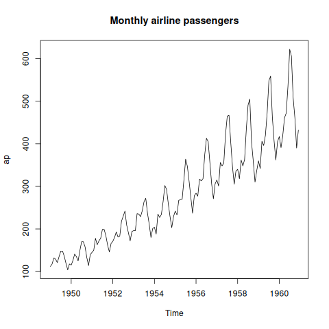
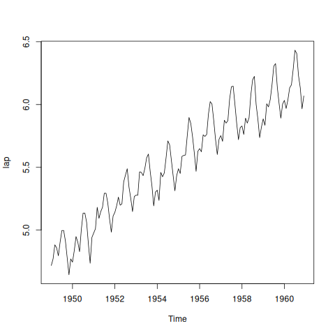
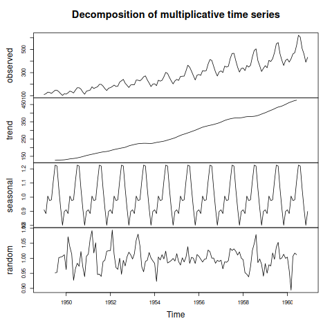
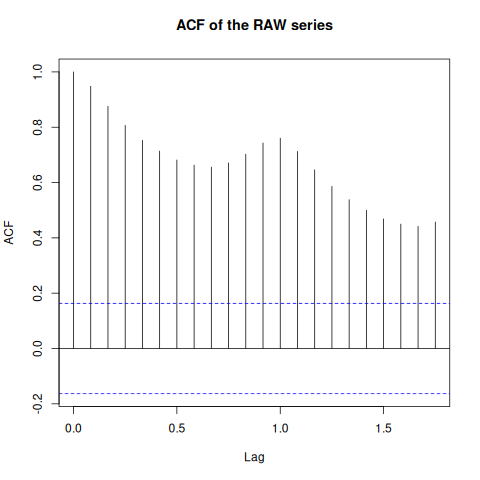
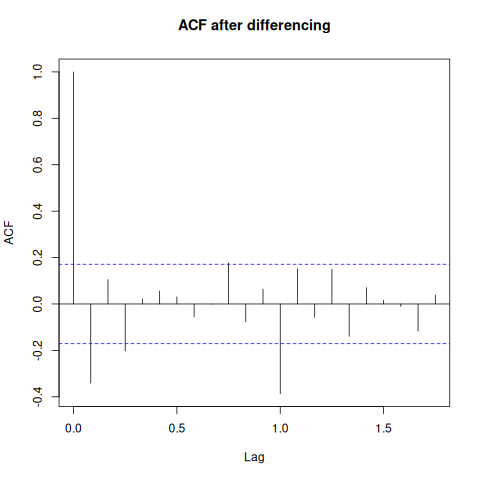
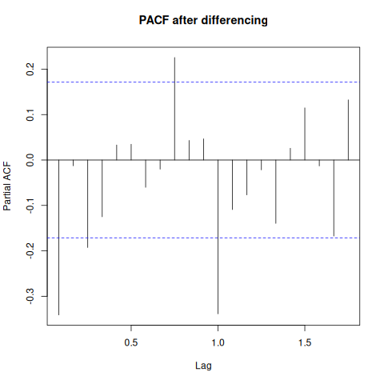
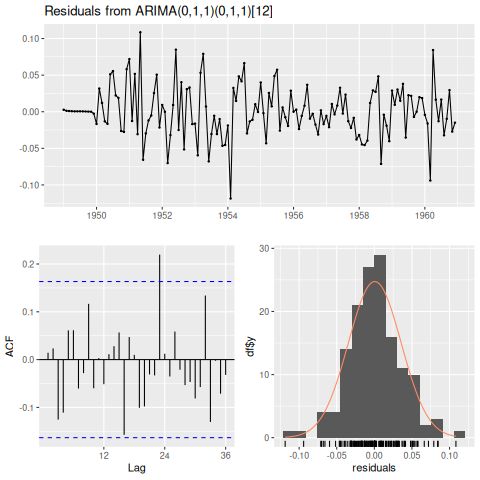
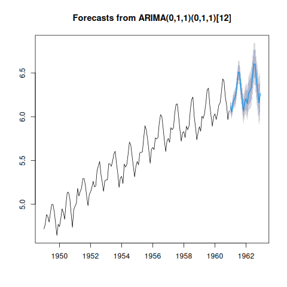
In Python, python/16_arima.py:
OUTPUT
THE SERIES R: ts(sales, frequency = 12)
36 monthly observations
▁▂▃▃▃▂▁▁▁▁▁▂▃▄▅▅▅▅▄▄▃▃▄▅▆▇▇█▇▇▇▇▆▆▆▇
first 6: [100.0, 111.75, 119.97, 122.7, 120.26, 114.84]
DECOMPOSITION R: decompose(ts)
trend (12-month centred MA), first and last known values:
t= 6 -> 112.48
t=29 -> 158.28
implied slope = 1.991 per month (series was built with 2.0)
STATIONARITY BY DIFFERENCING R: diff(ts) ; ndiffs(ts)
original mean= 135.07 sd= 20.93 first-half vs second-half mean gap = 29.30
differenced mean= 1.70 sd= 5.60 first-half vs second-half mean gap = 1.77
A large gap between the halves' means IS non-stationarity in the
mean. Differencing collapses it, which is what d=1 achieves.
ACF -- RAW SERIES R: acf(ts)
lag 1 +0.9022 +++++++++++++++++++++++++++
lag 2 +0.7814 +++++++++++++++++++++++
lag 3 +0.6518 +++++++++++++++++++
lag 4 +0.5276 +++++++++++++++
lag 5 +0.4201 ++++++++++++
lag 6 +0.3358 ++++++++++
lag 7 +0.2757 ++++++++
lag 8 +0.2351 +++++++
lag 9 +0.2048 ++++++
lag 10 +0.1734 +++++
lag 11 +0.1314 +++
lag 12 +0.0745 ++
lag 13 +0.0055
lag 14 -0.0667 +
Slow, monotonic decay and nothing else. This is the classic
signature of a TREND, and it is so dominant that the seasonality
built into this series is completely invisible here.
ACF -- DIFFERENCED SERIES R: acf(diff(ts))
lag 1 +0.7879 +++++++++++++++++++++++
lag 2 +0.3765 +++++++++++
lag 3 -0.0879 ++
lag 4 -0.4688 ++++++++++++++
lag 5 -0.6824 ++++++++++++++++++++
lag 6 -0.7071 +++++++++++++++++++++ <- MINIMUM: half a period out of phase
lag 7 -0.5692 +++++++++++++++++
lag 8 -0.3185 +++++++++
lag 9 -0.0137
lag 10 +0.2823 ++++++++
lag 11 +0.5038 +++++++++++++++
lag 12 +0.5931 +++++++++++++++++ <- local MAXIMUM: period-12 seasonality
lag 13 +0.5196 +++++++++++++++
lag 14 +0.3001 +++++++++
💡 THE LESSON: seasonality was NOT visible in the raw ACF, because
the trend swamped it. Only after differencing does the oscillation
appear -- negative around lag 6, peaking again at lag 12. This is
why the order of operations matters: difference FIRST, then read
the ACF and PACF. Reading them on a trending series tells you
almost nothing except 'there is a trend'.
PACF R: pacf(ts)
lag 1 +0.9022
lag 2 -0.1755
lag 3 -0.1034
lag 4 -0.0399
lag 5 +0.0067
lag 6 +0.0334
lag 7 +0.0393
lag 8 +0.0252
READING THEM (Unit 5 A.4):
ACF tails off, PACF cuts off after lag p -> AR(p), p from PACF
ACF cuts off after lag q, PACF tails off -> MA(q), q from ACF
ACF decaying slowly -> difference first
raw ACF decays monotonically (trend); differenced ACF peaks at
lag 12 and troughs at lag 6 (seasonality); slope recovered ✓
Corrected: this note said the raw ACF shows no seasonality at all, the trend dominating
completely; so did the script's comment. That is true of the Python equivalent's series, not of
the airline data. Also corrected: the script's comment expected a large ADF p-value on the raw
series. adf.test() allows for a linear trend, and gives p below 0.01, while KPSS rejects a
constant level, also p below 0.01: the series is trend-stationary.
The script's ACF after differencing is of d12, after both the ordinary and the seasonal
difference. What is left is a spike at lag 1 (−0.34) and one at lag 12 (−0.39): the pattern of an
MA(1) and a seasonal MA(1) term, which is the model auto.arima() then picks.
RESULT
auto.arima() chooses ARIMA(0,1,1)(0,1,1)[12] on the log series, with AIC −483.4. The Ljung-Box p of 0.233 leaves no pattern in the residuals, and the forecast for July 1962 is 738 thousand passengers.
Make the students' charts interactive with plotly.
Make a ggplot2 chart interactive, and draw plotly charts directly.
# =====================================================================
# Run with R 4.3.3. Rscript builds each chart but has nowhere to show it, so
# _drive_17_plotly.py runs this file with each chart saved as a web page, and
# opens each in Chromium for the screenshots on the lab page. (Until October
# 2026 R could not be installed where these labs are checked, so this file
# was desk-checked only.)
# =====================================================================
# Experiment 17: Interactive visualisations with plotly
# No Python equivalent -- this demonstrates plotly's R interface specifically.
library(plotly); library(ggplot2)
# Step 1: Make the students data frame
students <- data.frame(
name = c("Ananya","Bhavana","Charan","Divya","Eshwar",
"Fiona","Gopal","Harika","Ismail","Jyothi"),
section = c("A","A","B","B","A","C","C","B","A","C"),
hours = c(9, 5, 11, 4, 7, 8, 3, 10, 6, 2),
marks = c(85, 62, 91, 55, 74, 79, 48, 88, 68, 41))
# --- THE ONE-LINE ROUTE: convert any ggplot2 plot ---
# Step 2: Make a ggplot2 chart interactive
p <- ggplot(students, aes(x = hours, y = marks, colour = section)) +
geom_point(size = 3) +
labs(title = "Marks against study hours")
ggplotly(p) # hover, zoom and pan now work. That is the whole trick.
# --- NATIVE plotly ---
# Step 3: Draw a native plotly scatter, with hover text
plot_ly(students,
x = ~hours, y = ~marks, color = ~section, # NOTE the ~
type = "scatter", mode = "markers",
marker = list(size = 12),
text = ~paste("Name:", name, "<br>Marks:", marks),
hoverinfo = "text") %>%
layout(title = "Marks against study hours",
xaxis = list(title = "Hours studied"),
yaxis = list(title = "Marks"))
# TWO THINGS THAT CATCH PEOPLE:
# 1. plotly uses FORMULA notation (~hours) to name columns. Writing
# x = hours looks for a variable in your environment and fails.
# 2. plotly layers chain with %>%, NOT with + . This is the reverse of
# ggplot2, and mixing them is the commonest plotly error.
# --- BAR AND LINE ---
# Step 4: Draw a bar chart of the means
avg <- aggregate(marks ~ section, students, mean)
plot_ly(avg, x = ~section, y = ~marks, type = "bar",
marker = list(color = "#1e7fbf"))
# --- ANIMATION: one extra argument ---
# library(gapminder)
# plot_ly(gapminder, x = ~gdpPercap, y = ~lifeExp,
# size = ~pop, color = ~continent,
# frame = ~year, # <- this creates the animation
# type = "scatter", mode = "markers") %>%
# layout(xaxis = list(type = "log")) %>%
# animation_opts(frame = 1000, transition = 500, redraw = FALSE)
#
# frame = ~year is ALL an animation needs. plotly adds the play button and
# the slider automatically -- the famous Gapminder chart in six lines.
# --- RANGE SLIDER for a time series ---
# plot_ly(x = ~time(AirPassengers), y = ~AirPassengers,
# type = "scatter", mode = "lines") %>%
# rangeslider()
# --- EXPORT ---
# htmlwidgets::saveWidget(fig, "plot.html")OUTPUT
Loading required package: ggplot2
Attaching package: ‘plotly’
The following object is masked from ‘package:ggplot2’:
last_plot
The following object is masked from ‘package:stats’:
filter
The following object is masked from ‘package:graphics’:
layout
[chart 1, which RStudio would show in its Viewer, saved as chart1.html]
[chart 2, which RStudio would show in its Viewer, saved as chart2.html]
[chart 3, which RStudio would show in its Viewer, saved as chart3.html]
chart 1: "Marks against study hours", 3 trace(s)
[screenshot 1: chart 1]
chart 2: "Marks against study hours", 3 trace(s)
[screenshot 2: chart 2]
hovering over a point shows: Name: Ananya Marks: 85
[screenshot 3: chart 2, hovering over a point]
chart 3: "(no title)", 1 trace(s)
[screenshot 4: chart 3]
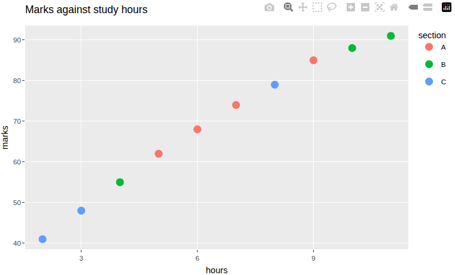
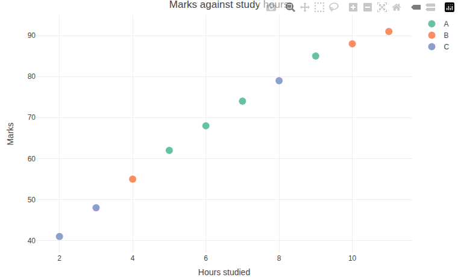
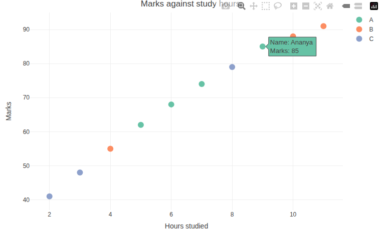
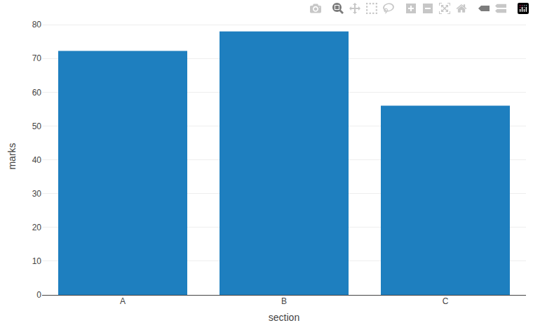
The screenshots are the three charts, in order, and the second again with the pointer over a point, showing its hover text. R itself prints only the packages' start-up messages.
RESULT
All three charts draw, and hovering over Ananya's point shows "Name: Ananya, Marks: 85": the hover text the script builds.
Build a Shiny app that lets a user upload a CSV file and explore it.
Write a Shiny app with an upload, a reactive data source and three output tabs.
THE THREE SHINY RULES
data(), never data.input$x only inside a reactive context — reactive(), observe() or
render*().
Output IDs must match between ui and server. A typo gives a blank
panel and no error message, so check spelling first.
req(input$file) is the idiomatic way to wait for an upload — it silently
pauses the reactive rather than erroring on NULL.
# =====================================================================
# Run with R 4.3.3. _drive_18_shiny_app.py starts this app, opens it in
# Chromium, uploads a CSV and goes through its three tabs, for the
# screenshots on the lab page. (Until October 2026 R could not be installed
# where these labs are checked, so this file was desk-checked only.)
# =====================================================================
# Experiment 18: A Shiny app that lets users upload a CSV file
# No Python equivalent -- this demonstrates the Shiny framework itself.
#
# Run with: shiny::runApp("18_shiny_app.R")
# or paste into RStudio and click "Run App".
library(shiny); library(ggplot2); library(dplyr)
# Step 1: Lay out the page: the upload, the options and three tabs
ui <- fluidPage(
titlePanel("CSV Explorer"),
sidebarLayout(
sidebarPanel(
fileInput("file", "Upload a CSV file", accept = ".csv"),
checkboxInput("header", "File has a header row", TRUE),
uiOutput("column_picker"), # built dynamically from the file
sliderInput("bins", "Histogram bins:", min = 5, max = 50, value = 20),
hr(),
helpText("Upload any CSV. The app lists its columns and plots whichever",
"numeric column you choose.")
),
mainPanel(
tabsetPanel(
tabPanel("Data", tableOutput("preview")),
tabPanel("Summary", verbatimTextOutput("summary")),
tabPanel("Plot", plotOutput("histogram"))
)
)
)
)
server <- function(input, output, session) {
# ONE reactive, shared by every output. Written this way the file is read
# ONCE per upload; copying read.csv() into each render*() would read it
# three times.
# Step 2: Read the uploaded file once, in a reactive
data <- reactive({
req(input$file) # wait until a file is uploaded
read.csv(input$file$datapath, header = input$header,
stringsAsFactors = FALSE)
})
# Build the column dropdown from the uploaded file's numeric columns.
# Step 3: Build the column picker from the file
output$column_picker <- renderUI({
req(data())
nums <- names(data())[sapply(data(), is.numeric)]
selectInput("column", "Numeric column to plot:", choices = nums)
})
# Step 4: Fill the data, summary and plot tabs
output$preview <- renderTable({
head(data(), 10) # NOTE the parentheses: data()
})
output$summary <- renderPrint({
summary(data())
})
output$histogram <- renderPlot({
req(input$column)
ggplot(data(), aes(x = .data[[input$column]])) +
geom_histogram(bins = input$bins, fill = "#1e7fbf", colour = "white") +
labs(title = paste("Distribution of", input$column),
x = input$column) +
theme_minimal()
})
}
# Step 5: Run the app
shinyApp(ui = ui, server = server)
# THE THREE RULES THAT CAUSE MOST SHINY BUGS:
# 1. Call a reactive WITH parentheses: data(), never data.
# 2. input$x can only be read inside a reactive context -- reactive(),
# observe() or render*(). At the top level of server() it errors.
# 3. Every output ID must match: plotOutput("histogram") in the UI pairs
# with output$histogram in the server. A typo gives a blank panel and
# NO error message, so check spelling first when nothing appears.
#
# req() is the idiomatic way to wait for an input: it silently stops the
# reactive until its argument is available, instead of erroring on NULL.OUTPUT
started the app with shiny::runApp('18_shiny_app.R')
page title: CSV Explorer
before an upload, the Data tab shows 0 table(s)
uploaded students.csv; the Data tab shows the columns ['name', 'section', 'hours', 'marks'], 10 rows
first row: ['Ananya', 'A', '9', '85']
the column picker offers the numeric columns: ['hours', 'marks']
[screenshot 1: the Data tab, after the upload]
the Summary tab shows summary(data()):
name section hours marks
Length:10 Length:10 Min. : 2.00 Min. :41.00
Class :character Class :character 1st Qu.: 4.25 1st Qu.:56.75
Mode :character Mode :character Median : 6.50 Median :71.00
Mean : 6.50 Mean :69.10
3rd Qu.: 8.75 3rd Qu.:83.50
Max. :11.00 Max. :91.00
[screenshot 2: the Summary tab]
the Plot tab draws a histogram of hours
[screenshot 3: the Plot tab, hours]
chose the column marks and 8 bins; the histogram is redrawn
[screenshot 4: the Plot tab, marks in 8 bins]
stopped the app
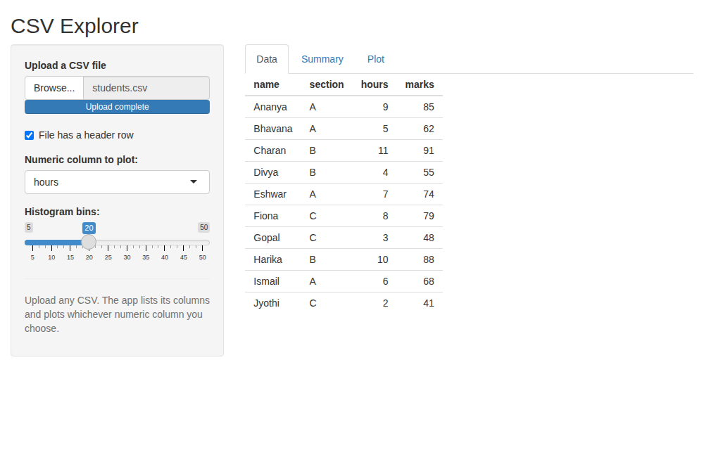
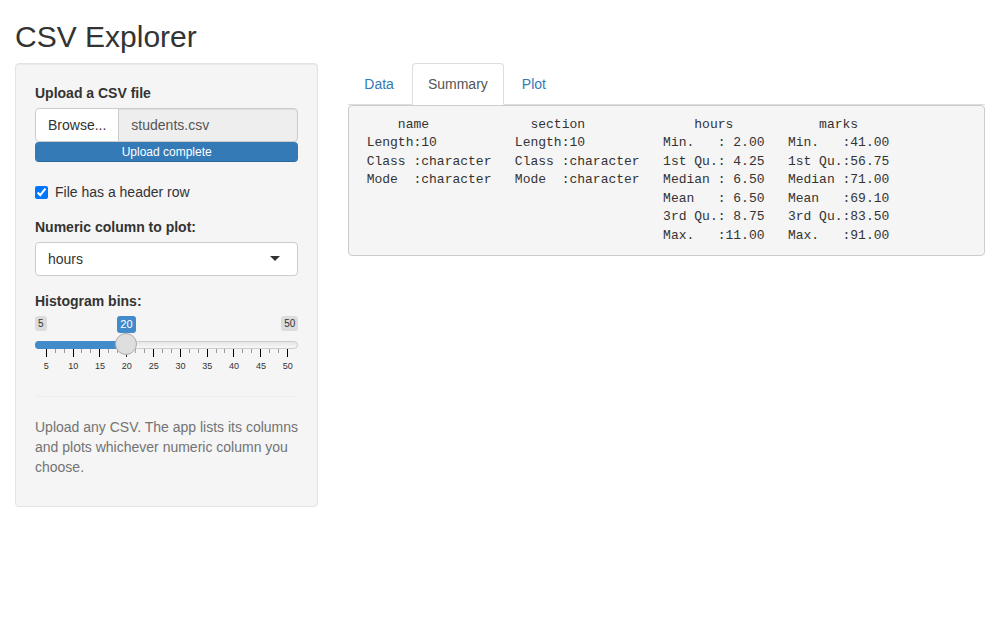
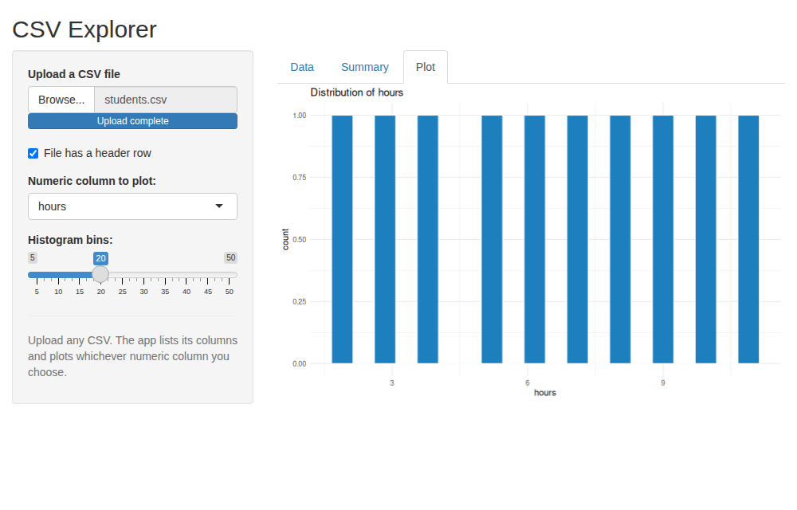
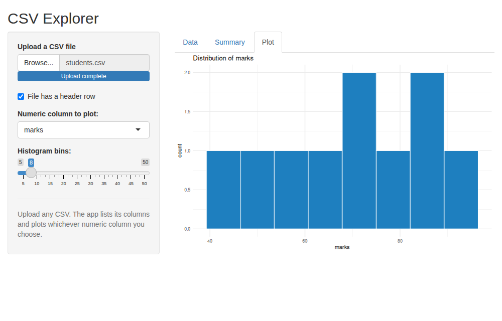
Before the upload the Data tab is empty: req() holds every output back. The summary is
R's summary() of the uploaded file, printed by the app.
RESULT
The app reads the uploaded file, lists its two numeric columns, summarises it, and redraws the histogram when the column or the number of bins changes.
set.seed() before anything random — clustering, sampling, simulation.
Without it your results are not reproducible, which is a fault in itself.
str() and summary() first, always. Know your data before analysing it.
Comment the interpretation, not the syntax. # r = 0.99, very strong
positive earns marks; # compute correlation does not.
Label every plot — title, axis labels, legend.
var.equal = TRUE?", "what happens without
scale()?", "why difference before reading the ACF?"This part of the lab is a written procedure rather than a program.
The same experiments again, split by language, so a page can be reached by the thing it teaches rather than by its number.